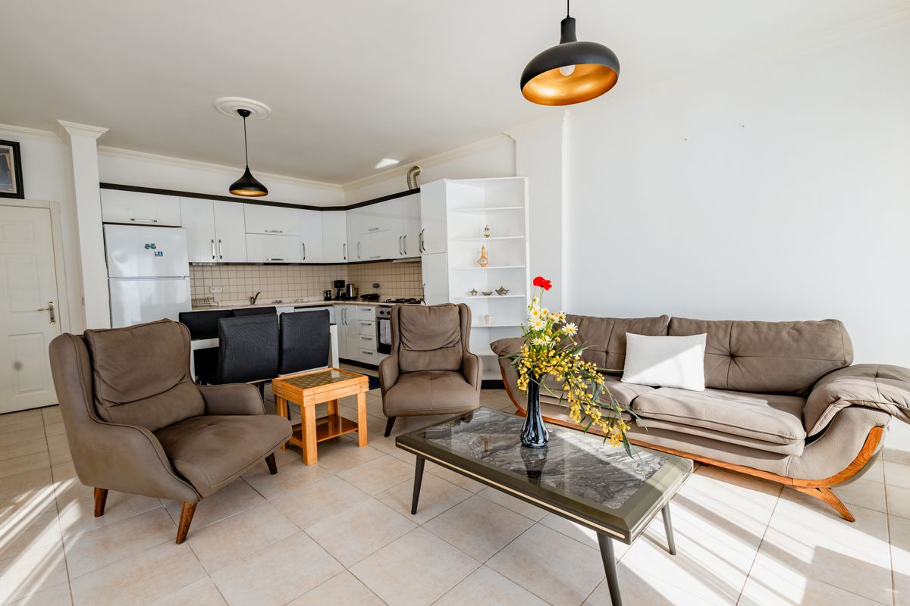
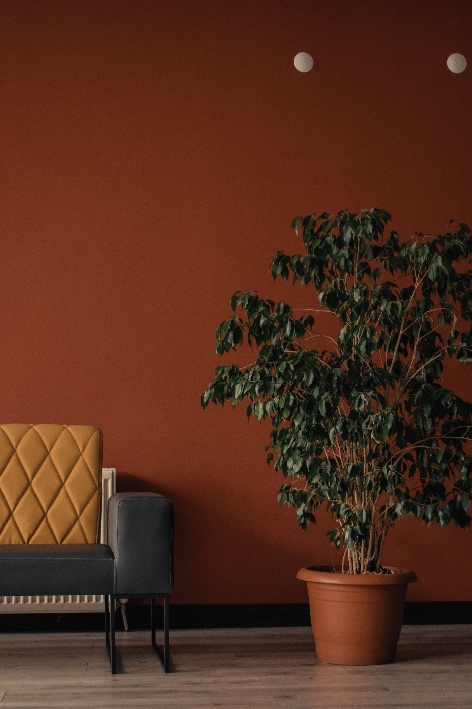
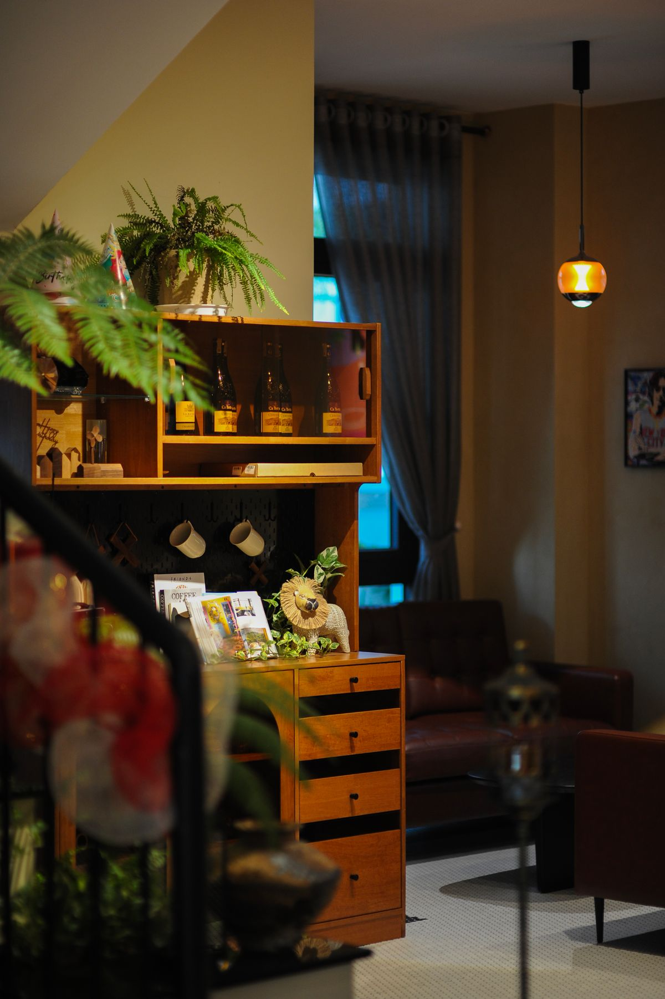
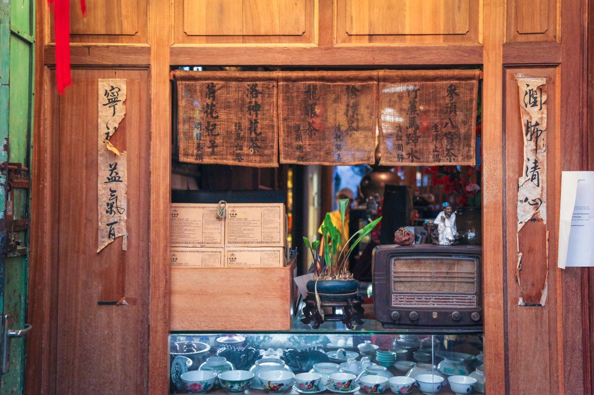

现代简约
Modern Minimalist — 少即是多

现代简约风格
现代简约风格起源于20世纪初的包豪斯学派，强调"形式服从功能"，摒弃多余装饰，追求空间本质。在南宁市场，该风格因造价可控、视觉清爽，是90-140㎡刚需/改善户型的首选。
核心设计原则
- 功能至上：每一件家具、每一条线条都有其存在理由，拒绝纯装饰性元素
- 少即是多：Less is more — 路德维希·密斯·凡德罗的经典信条
- 空间通透：强调开放式布局，减少实体隔断，用玻璃/半墙/家具划分区域
- 线条简洁：直线为主，少量几何曲线，避免复杂雕花和造型
配色方案（CSS色板）
现代简约的配色以中性色为基底，点缀少量跳色。以下为经典配色组合：
适用户型
- 最佳 90-140㎡ 平层：空间适中，简约不显空旷
- 通用 60-90㎡ 小户型：视觉扩容效果明显
- 慎用 >200㎡ 大平层/别墅：过于空旷，需要融入其他元素
参考材料
| 部位 | 推荐材料 | 备选 |
|---|---|---|
| 地面 | 600×1200mm 柔光砖 / 实木复合地板 | SPC石塑地板 |
| 墙面 | 乳胶漆（哑光白/浅灰） | 艺术漆微纹理 |
| 天花 | 平顶 + 无主灯嵌入式射灯 | 局部悬浮吊顶 |
| 柜体 | PET肤感门板（纯色） | 混油实木贴皮 |
侘寂风
Wabi-Sabi — 残缺之美，时光之痕
侘寂风格
侘寂（Wabi-Sabi）源自日本禅宗美学，核心是接受不完美、欣赏自然老化带来的美感。在室内设计中表现为粗犷的墙面肌理、自然材料的本色呈现、克制低调的空间氛围。适合追求精神内涵和独特品味的高端客户。
核心理念
- 不对称之美：拒绝完美对称，追求自然随机的平衡感
- 质朴与克制：材料回归本源，不刻意修饰，保留手工痕迹
- 时间的痕迹：欣赏物品随时间老化的过程，锈迹/裂纹/褪色皆是美
- 留白与静寂：大量留白营造沉思空间，拒绝视觉噪音
色调搭配
材质选择
| 类别 | 首选材料 | 特征 |
|---|---|---|
| 墙面 | 微水泥 / 艺术涂料（斑驳纹理） | 手工批刮痕迹、色差容忍 |
| 地面 | 哑光微水泥 / 水磨石 / 旧木地板 | 无缝、温润触感 |
| 家具 | 风化实木 / 藤编 / 亚麻 | 原木本色、不涂装或薄涂 |
| 装饰 | 手工陶器 / 干枝 / 石材摆件 | 粗陶质感、自然形态 |
注意事项
- 避免过度装饰：一盏孤灯、一截枯木即可，无需堆砌
- 灯光必须暖色（2700K-3000K），冷光会破坏氛围
- 软装少而精，每件单品都应是"主角"
- 不适合有幼儿的家庭：微水泥地面硬，儿童摔倒风险大
奶油风
Cream Style — 温柔治愈，如沐春风

奶油风格
奶油风是2022-2025年国内最火的装修风格之一，以低饱和度的奶白/奶咖/浅灰色系为主，营造温柔、治愈、慵懒的空间氛围。在南宁年轻女性业主中接受度极高，适合80-120㎡中小户型。
色彩体系
奶油风的核心是"加了灰调的白"，所有颜色都带暖灰底，绝不使用纯白或高饱和色。
软装搭配要点
- 沙发：云朵沙发/豆腐块沙发，米白色或奶咖色，材质选绒布或羊羔绒
- 地毯：羊毛混纺，奶油色底 + 不规则几何线条
- 窗帘：雪尼尔或绒布，同色系，比墙面深1-2度
- 灯具：弧形/圆球造型，纸质灯罩或磨砂玻璃
- 装饰画：抽象色块画，色调统一，不加玻璃反光
灯光设计
奶油风极度依赖灯光来烘托氛围，灯光设计是成败关键：
- 全屋色温：统一 3000K，绝不上 4000K
- 无主灯：射灯 + 磁吸轨道灯 + 线性灯带（间接照明）
- 重点照明：沙发旁钓鱼灯/落地灯，床头壁灯
- 氛围灯光：电视背景墙暗藏灯带、窗帘盒灯带
- 显色指数：Ra ≥ 95，确保色彩还原真实
中古风
Mid-Century Modern — 复古优雅，经典永存

中古风格（Mid-Century Modern）
中古风起源于1940-1960年代的美国和北欧，以温暖的木色调、流畅的有机曲线和功能性设计著称。近年来在国内重新流行，尤其是对设计有一定品位的年轻中产群体。南宁市场多见于120㎡以上的改善型住宅。
起源与设计哲学
- 时间背景：二战后经济复苏期，中产阶级崛起对"好设计"产生需求
- 代表人物：Charles & Ray Eames、Eero Saarinen、Hans Wegner
- 设计理念：好的设计应该是人人负担得起的，兼具美观与实用
标志性家具
- 伊姆斯躺椅（Eames Lounge Chair）：黑胡桃木 + 黑色皮革，中古风灵魂单品
- 子宫椅（Womb Chair）：Saarinen 设计，有机曲线，舒适包裹感
- Y椅（CH24 Wishbone Chair）：Hans Wegner，纸绳坐垫 + 橡木框架
- 野口勇茶几（Noguchi Table）：玻璃面 + 雕塑感实木底座
配色逻辑
中古风的配色公式：70% 暖木色 + 20% 中性底 + 10% 高饱和点缀（芥末黄/橄榄绿/陶土红/钴蓝任选一）。
空间特征
- 开放式平面布局，客餐一体化
- 大面积窗户引入自然光
- 半墙护墙板（Chair Rail） + 墙纸上半部分
- 鱼骨拼/人字拼木地板
新中式
New Chinese Style — 东方意蕴，当代演绎

新中式风格
新中式是对传统中式风格的现代化转译，摒弃了传统中式的繁复雕花和沉重色调，保留东方美学的留白、对称、意境等核心要素，用现代材料和简洁手法重新表达。南宁作为广西首府，民族文化底蕴深厚，新中式在当地有天然的接受土壤。
传统与现代的融合
- 去形取意：不照搬明清家具，而是提炼其线条比例和结构逻辑
- 材质现代化：传统的红木替换为胡桃木/橡木搭配金属、玻璃、大理石
- 色彩克制：以黑白灰为底，点缀朱砂红、黛蓝、墨绿等中国传统色
元素提取
- 圆形元素：月洞门简化版、圆镜、圆形挂画
- 格栅：木质格栅隔断（简化密度，避免压抑）
- 山水意境：抽象水墨画、山形摆件
- 盆景/枯山水局部：玄关或书房一角
空间布局
- 讲究对称但非绝对对称，以中轴线为基准的均衡布局
- 玄关必做，体现"藏"的东方哲学
- 客厅主背景墙（电视/沙发背景）选用石材纹理呼应山水
- 书房/茶室是新中式标配，体现主人的精神空间
极简主义
Minimalism — 极致减法，心灵归处
极简主义风格
极简主义不同于现代简约——前者追求的是"极致减法"，几乎消除一切非必要元素。这种风格对收纳系统要求极高（所有物品必须藏起来），对施工精度要求严苛（没有装饰性线条来遮丑）。适合预算充足、追求极致品质的小众客户。
设计原则
- 一无所有：台面无物、地面无物、墙面极少装饰
- 极致收纳：全屋收纳率需达到12%-15%（普通住宅8%-10%）
- 隐形设计：隐形门、隐形踢脚线、无拉手柜门
- 几何纯粹：空间中只有矩形、圆形等基本几何形
收纳系统
| 区域 | 收纳方案 | 容量建议 |
|---|---|---|
| 玄关 | 整墙柜体（鞋柜+挂衣+杂物），底部悬空15cm | ≥ 80双鞋 |
| 客厅 | 满墙电视柜（深35cm），开放格≤20% | ≥ 5m³ |
| 厨房 | U型布局，吊柜到顶，高柜电器塔 | ≥ 6延米地柜 |
| 卧室 | 整墙衣柜（深60cm），内部全挂装+抽屉 | ≥ 4m宽 |
| 家政间 | 独立家政柜（清洁工具+洗涤用品+备品） | ≥ 2㎡ |
留白艺术
- 墙面留白：大面积纯色墙面，最多一幅抽象画点缀
- 天花留白：完全平面，无石膏线、无灯盘、无造型
- 地面留白：看不到任何杂物、电线、临时放置的物品
水电改造
隐蔽工程 — 绝对不能省的环节
水电改造工艺标准
水电改造是装修中最关键的隐蔽工程，一旦封槽贴砖后出现问题，维修成本是当初改造的10倍以上。以下为行业通用规范（参照GB 50327-2001《住宅装饰装修工程施工规范》）。
施工流程图
定位标准
- 开关插座高度：普通插座距地 30cm；开关距地 130cm；厨房台面插座距台面 30cm
- 强弱电间距：平行走管 ≥ 30cm；交叉处包锡箔纸屏蔽
- 热水管：左热右冷，中心距 15cm
开槽规范
- 横向开槽：承重墙禁止横向开槽超过 30cm；非承重墙不超过 50cm
- 槽深要求：线管直径的 1.5 倍以上
- 开槽后必须清理浮灰，浇水湿润后再封槽
管道走向
- 水路走顶：卫生间/厨房水管必须走顶（非走地），便于后期检修
- 电路走地：点对点或横平竖直均可，大弧弯工艺为佳
- 排水坡度：排水管坡度 ≥ 1%，即每米下降 ≥ 1cm
验收要点
- 打压测试：冷水管 0.9MPa（9公斤）、热水管 1.2MPa（12公斤），保压 30 分钟，压降 ≤ 0.05MPa 为合格
- 绝缘电阻：≥ 0.5MΩ（兆欧表测量）
- 通球试验：排水管投入直径不小于管径 2/3 的球，能顺利通过
- 拍照留底：封槽前对所有管线走向拍照存档，标注尺寸，后期打孔参照
防水施工
防水的钱一分不能省
防水施工标准
各区域防水标准
| 区域 | 防水高度 | 防水层数 | 推荐材料 |
|---|---|---|---|
| 卫生间地面 | 全地面 + 上翻 30cm | ≥ 2 遍 | JS聚合物水泥防水涂料 II 型 |
| 卫生间淋浴区墙面 | ≥ 180cm | ≥ 2 遍 | JS防水涂料 或 K11通用型 |
| 卫生间干区墙面 | ≥ 30cm | 1-2 遍 | JS防水涂料 |
| 阳台地面 | 全地面 + 上翻 20cm | ≥ 2 遍 | JS防水涂料 |
| 厨房地面 | 全地面 + 上翻 20cm | 1-2 遍 | JS防水涂料 |
闭水试验流程
关键节点处理
- 管根/地漏：用堵漏王做 R 角处理（抹成弧形），再刷防水
- 阴阳角：做圆弧处理，附加无纺布加强层
- 门槛石：先铺门槛石再做防水，防水层上翻门槛石侧面
- 卫生间门口外侧：防水向外延伸 ≥ 50cm，做挡水坎
瓷砖铺贴
薄贴法 vs 传统法，选对工艺不空鼓
瓷砖铺贴工艺
薄贴法 vs 传统法对比
| 对比维度 | 薄贴法（推荐） | 传统厚贴法 |
|---|---|---|
| 粘结材料 | 瓷砖胶（C2TES1级别） | 水泥砂浆（1:3） |
| 粘结层厚度 | 3-5mm | 20-30mm |
| 空鼓率 | < 3% | 5%-15% |
| 适用瓷砖 | 大板岩板/低吸水率砖 | 高吸水率瓷片 |
| 单价（含人工） | 60-80 元/㎡ | 40-55 元/㎡ |
| 对基层要求 | 平整度 ≤ 3mm/2m | 一般即可 |
排版设计要点
- 预排版：铺贴前做全屋排版图，避免窄条（< 10cm）出现在显眼位置
- 起铺点：从入户门或客厅主视线方向起铺，整砖优先
- 对缝：墙地对缝（墙面砖缝对齐地面砖缝），美观度提升 50%
- 通铺：客厅/餐厅/厨房/阳台通铺不用过门石，空间感更强
美缝选择
| 类型 | 特点 | 价格 | 推荐场景 |
|---|---|---|---|
| 环氧彩砂 | 哑光质感、硬度高、耐黄变 | 15-25 元/㎡ | 卫生间/厨房墙面 |
| 聚脲美缝 | 柔韧性好、极耐黄变、快干 | 25-40 元/㎡ | 浅色砖/阳台/阳光直射区 |
| 真瓷胶 | 亮光、易施工、价格低 | 8-15 元/㎡ | 预算有限的次要空间 |
木工吊顶
轻钢龙骨 — 南宁潮湿环境的首选
木工吊顶工艺
轻钢龙骨 vs 木龙骨
| 对比维度 | 轻钢龙骨 | 木龙骨 |
|---|---|---|
| 防潮性 | 完全不吸潮 | 易受潮变形 |
| 防火性 | A级不燃 | B级可燃（需刷防火涂料） |
| 平整度 | 高，不易变形 | 受温湿度影响大 |
| 价格 | 45-60 元/㎡ | 35-50 元/㎡ |
| 南宁适用性 | 强烈推荐 | 仅限干燥区域零星使用 |
造型工艺
- 悬浮吊顶：四周留10-15cm灯槽，中间下沉，流行于现代简约/奶油风
- 双眼皮：双层石膏板叠级（3+3cm），替代传统石膏线，简洁有层次
- 弧形吊顶：过渡区做弧形，柔化空间，工艺难度较高
- 满吊平顶：全屋吊平顶 + 嵌入式无主灯，极简标配
防裂处理
墙面工艺
从找平到面漆，每一步都不能省
墙面标准施工流程
每步标准
| 步骤 | 材料 | 标准要求 | 间隔时间 |
|---|---|---|---|
| 墙固 | 界面剂（墙固） | 满刷不漏底，封固基层浮灰 | 2小时 |
| 石膏找平 | 粉刷石膏/轻质抹灰 | 2m靠尺 ≤ 3mm | 24-48小时 |
| 第一遍腻子 | 耐水腻子 | 满刮，厚度1-2mm，阴阳角顺直 | 24小时 |
| 第二遍腻子 | 耐水腻子 | 收光平整，无砂眼气泡 | 48小时 |
| 打磨 | 240# → 320# 砂纸 | 灯光侧照无波浪纹 | — |
| 底漆 | 抗碱封闭底漆 | 均匀涂刷，不得漏刷 | 4-6小时 |
| 面漆 | 乳胶漆（哑光/蛋壳光） | 两遍，纹理均匀，无流挂 | 间隔4小时 |
微水泥施工
无缝美学，对基层和手艺要求极高
微水泥施工工艺
基层处理
- 地面基层：水泥砂浆找平后打磨，平整度 ≤ 2mm/2m，无空鼓开裂
- 墙面基层：耐水腻子 + 抗碱底漆，表面坚固无浮灰
- 必须涂刷专用界面剂：增强微水泥与基层的粘结力
- 铺设抗裂网格布：地面/墙面满铺，搭接 ≥ 10cm
批刮工艺
罩面保护
- 必须使用双组份水性聚氨酯罩面，单组分丙烯酸寿命短
- 罩面至少 2 遍，每遍间隔 4-6 小时
- 完全固化 7 天后方可正常使用（期间避免重物和尖锐物品）
- 后期维护：每 2-3 年重新滚涂一层罩面保护剂
· 地面微水泥：200-400 元/㎡（含基层处理）
· 墙面微水泥：150-250 元/㎡
· 台面/洗手池微水泥：另议（造型复杂）
不适合场景：有宠物（爪子划痕）、幼儿家庭、预算紧张的刚需装修。
瓷砖类
读懂瓷砖参数，选对不选贵
瓷砖品类对比
| 品类 | 单价（元/㎡） | 耐磨度 | 防滑性 | 适用场景 | 备注 |
|---|---|---|---|---|---|
| 抛釉砖 | 60-120 | ★★★☆ | ★★★ | 客餐厅地面 | 花色丰富，性价比高 |
| 通体砖 | 100-200 | ★★★★★ | ★★★★ | 客餐厅/阳台/商业 | 表里如一，磨了还是那个色 |
| 岩板 | 300-1000+ | ★★★★☆ | ★★★ | 背景墙/岛台/台面 | 大规格（可到3.2m），薄而韧 |
| 花砖/手工砖 | 150-400 | ★★★ | ★★★☆ | 玄关/卫生间/局部点缀 | 釉面花色，不适合大面积 |
| 柔光砖 | 80-180 | ★★★★ | ★★★ | 全屋通铺 | 介于亮光和哑光之间的质感 |
| 木纹砖 | 80-150 | ★★★★ | ★★★★ | 卧室/客餐厅（替代木地板） | 南宁潮湿环境替代木地板首选 |
选购要点
- 吸水率：地砖 ≤ 0.5%（全瓷），墙砖可放宽到 3%-6%
- 平整度：两片砖面对面贴合，缝隙均匀 ≤ 0.5mm
- 产地：广东佛山砖综合品质最稳定，山东砖价格低但釉面偏薄
地板类
实木/多层/强化/SPC，南宁潮湿环境怎么选
地板品类对比
| 品类 | 单价（元/㎡） | 环保等级 | 防潮性 | 脚感 | 南宁推荐度 |
|---|---|---|---|---|---|
| 纯实木地板 | 300-800+ | 天然 | 差 | ★★★★★ | ★★☆（易变形） |
| 多层实木复合 | 200-400 | E0/ENF | 中等 | ★★★★ | ★★★★ |
| 强化地板 | 80-200 | E1/E0 | 中等 | ★★★ | ★★★ |
| SPC石塑地板 | 60-150 | 零甲醛 | 优 | ★★☆ | ★★★★★ |
| WPC木塑地板 | 120-250 | 零甲醛 | 优 | ★★★ | ★★★★☆ |
· 预算充足+追求脚感 → 多层实木复合（选表层≥2mm厚木皮）
· 性价比+防潮优先 → SPC石塑地板（卡扣式，自装可省人工费）
· 不推荐纯实木：南宁回南天湿度可达95%，实木膨胀起拱风险极高
涂料类
墙面材料选型指南
涂料品类对比
| 品类 | 单价（元/㎡含工） | 耐久性 | 环保性 | 质感 | 适用场景 |
|---|---|---|---|---|---|
| 乳胶漆（哑光） | 20-40 | 8-12年 | ★★★★ | 平滑哑光 | 全屋通用，性价比之王 |
| 艺术漆 | 80-200 | 10-15年 | ★★★★☆ | 纹理丰富（天鹅绒/肌理/金属） | 背景墙/侘寂风/中古风 |
| 微水泥（墙面） | 150-250 | 15-20年 | ★★★★ | 无缝哑光工业感 | 侘寂/极简/工业风 |
| 硅藻泥 | 60-120 | 8-15年 | ★★★★★ | 粗颗粒自然感 | 卧室/儿童房（调湿） |
乳胶漆选购要点
- 耐擦洗次数：国标 ≥ 5000次为优等品，家庭建议 ≥ 6000次
- 对比率：≥ 0.95（遮盖力强，一底两面即可）
- VOC含量：＜ 50g/L（国标），优选＜ 10g/L 的产品
- 光泽度选择：客厅用哑光（隐藏墙面瑕疵），厨卫用丝光/蛋壳光（耐擦洗）
石材类
大理石/岩板/石英石/人造石 怎么选
石材品类对比
| 品类 | 单价（元/延米或㎡） | 硬度 | 耐污 | 适用 | 保养 |
|---|---|---|---|---|---|
| 天然大理石 | 400-2000/㎡ | ★★★ | 差（易渗色） | 背景墙/窗台/淋浴房拉槽板 | 需定期结晶打磨 |
| 岩板 | 500-3000/延米 | ★★★★★ | ★★★★★ | 厨房台面/岛台/背景墙/餐桌 | 几乎免维护 |
| 石英石 | 300-800/延米 | ★★★★☆ | ★★★★ | 厨房台面（主流） | 常规清洁即可 |
| 人造石（亚克力） | 200-600/延米 | ★★☆ | ★★★ | 窗台/吧台/异形台面 | 可修复，易划伤 |
· 厨房台面首选石英石（性价比+耐污），预算充足选岩板（颜值+耐高温）
· 大理石慎用于厨房台面——酱油/红酒/柠檬汁都会渗色且不可逆
· 岩板台面注意边缘倒角：建议做小圆弧（R3-R5），避免直角崩边
定制柜体板材
颗粒板/多层板/生态板/实木 — 一分钱一分货
柜体板材对比
| 板材 | 单价（元/㎡投影） | 环保 | 防潮 | 握钉力 | 推荐用途 |
|---|---|---|---|---|---|
| 颗粒板（刨花板） | 700-1000 | E0/ENF | ★★☆ | ★★★ | 衣柜/书柜柜体 |
| 多层实木板 | 900-1300 | E0/ENF | ★★★★ | ★★★★ | 厨柜/卫柜（防潮需求） |
| 生态板（大芯板） | 800-1200 | E0 | ★★★ | ★★★ | 衣柜柜体（木工现场做） |
| 实木（橡木/樱桃木） | 1800-4000+ | 天然 | ★★★ | ★★★★★ | 高端柜体/柜门 |
| PET肤感门板 | 200-350/㎡门板 | — | — | — | 柜门（奶油风/极简标配） |
选购防坑指南
- 看截面：颗粒板截面均匀细腻，多层板截面可见木皮分层
- 闻味道：打开柜门无明显刺激性气味
- 问五金：铰链品牌（百隆/海蒂诗>悍高>杂牌），决定柜体寿命
- 看封边：PUR封边 > EVA封边，激光封边最佳但价格翻倍
- 南宁防潮：橱柜/卫柜/阳台柜必须选多层实木板或防潮颗粒板
门窗类
断桥铝/系统窗/极窄框 — 隔音保温的关键
门窗品类对比
| 品类 | 单价（元/㎡） | 隔音 | 保温 | 适用场景 |
|---|---|---|---|---|
| 普通断桥铝 | 500-800 | ★★★☆ | ★★★★ | 性价比之选，常规住宅 |
| 系统门窗 | 1000-2500 | ★★★★★ | ★★★★★ | 临街/高架/机场附近 |
| 极窄框推拉门 | 800-1500 | ★★★ | ★★★ | 阳台/厨房/室内隔断 |
| 铝包木窗 | 2000-4000+ | ★★★★☆ | ★★★★★ | 别墅/高端住宅 |
选购要点
- 型材壁厚：新国标 1.8mm（旧标 1.4mm 已淘汰）
- 玻璃配置：标配 5+20A+5 中空钢化，临街选夹胶中空 5+0.76PVB+5+12A+5
- 隔热条：必须 PA66 尼龙隔热条（非 PVC），宽度 ≥ 24mm
- 五金件：德国好博（执手）/ 丝吉利娅 / 诺托
- 安装：发泡胶填充 + 外墙防水 + 密封胶收口，安装质量占最终效果 50%
配色法则
6:3:1 黄金配比 + 冷暖平衡
配色核心法则
6:3:1 黄金配比
这是室内设计中最经典的颜色分配比例：
- 60% — 主色调：墙面 + 地面 + 天花板 + 大面积柜体。通常为中性色（白/灰/米/奶咖）
- 30% — 辅助色：沙发 + 窗帘 + 床品 + 地毯。与主色同色系或邻近色
- 10% — 点缀色：抱枕 + 挂画 + 摆件 + 绿植。可以大胆使用高饱和/对比色
冷暖搭配技巧
| 色调 | 色相范围 | 空间感受 | 推荐朝向 |
|---|---|---|---|
| 暖色调 | 红/橙/黄/米/奶咖 | 温馨、亲近、活跃 | 朝北房间（缺阳光） |
| 冷色调 | 蓝/绿/紫/灰蓝 | 清爽、理性、安静 | 朝西/朝南（阳光足） |
| 中性调 | 白/灰/黑/米灰 | 百搭、包容 | 全朝向通用 |
跳色技巧
① 一个空间最多 1 个跳色（多了就乱）
② 跳色占比 ≤ 10%（抱枕、单椅、一盏灯、一幅画）
③ 跳色与主色在色环上呈 120°-180°（互补或对比关系）
灯光设计
无主灯方案 + 色温科学 + 三层照明
灯光设计方案
无主灯方案
| 灯具类型 | 功率建议 | 光束角 | 安装间距 | 用途 |
|---|---|---|---|---|
| 嵌入式射灯 | 7-12W | 24°/36° | 80-120cm | 基础照明/洗墙 |
| 磁吸轨道灯 | 10-20W/米 | 泛光/格栅 | 距墙 50-70cm | 客厅主照明 |
| 线性灯带 | 8-14W/米 | 120° | 天花/柜体/踢脚线 | 氛围/间接照明 |
| 落地灯/壁灯 | 5-10W | — | 阅读角/床头 | 重点照明 |
色温选择
- 2700K-3000K（暖黄光）：卧室、餐厅、客厅（温馨放松）
- 3500K-4000K（自然光）：厨房、书房、卫生间（清晰明亮）
- 5000K+（冷白光）：不推荐家用（医院/办公室风格，冰冷）
- 色温统一原则：同一可视空间内色温必须统一，不同区域可分层设定
三层照明体系
（基础照明）
（功能性照明）
（情绪照明）
- 环境光：射灯、筒灯、吸顶灯 → 确保空间整体亮度
- 任务光：橱柜灯带、书桌台灯、镜前灯 → 满足具体操作需求
- 氛围光：灯带、壁灯、落地灯 → 营造层次和情绪
窗帘选择
面料 × 遮光度 × 安装方式
窗帘选型指南
材质对比
| 材质 | 遮光度 | 垂坠感 | 适合风格 | 价格（元/米） |
|---|---|---|---|---|
| 雪尼尔 | 80%-95% | ★★★★★ | 现代简约/奶油风 | 80-150 |
| 绒布 | 85%-100% | ★★★★ | 轻奢/中古风 | 100-200 |
| 高精密 | 70%-90% | ★★★★☆ | 新中式/现代 | 120-250 |
| 亚麻/棉麻 | 40%-70% | ★★★ | 日式/侘寂/自然风 | 60-120 |
| 纱帘（幻影纱/金刚纱） | 10%-30% | ★★★ | 全风格（内层） | 30-80 |
安装方式
- 窗帘盒（推荐）：木工阶段预留，宽度 15-20cm（单层）/ 25-30cm（双层），隐藏轨道美观
- 罗马杆：明装，适合复古/法式风格，遮光有漏光（杆头两端）
- 电动轨道：窗帘盒内预留电源，支持智能家居联动，预算增加 1000-3000 元
家具尺度
黄金尺寸让空间"刚刚好"
标准家具尺寸与空间关系
| 家具 | 标准尺寸（长×宽×高 cm） | 所需空间 | 注意事项 |
|---|---|---|---|
| 三人沙发 | 220-280 × 90-100 × 70-85 | 前方留 60-80cm 通行 | 沙发深度别超 100cm，否则坐深过大不舒服 |
| 双人沙发 | 160-200 × 85-95 × 70-85 | 前方留 60cm | 小客厅首选 |
| 单人休闲椅 | 75-90 × 75-90 × 75-85 | 周围留 50cm | 配合落地灯形成阅读角 |
| 茶几 | 120-140 × 60-80 × 38-45 | 距沙发 35-45cm | 高度与沙发坐高平齐或略低 |
| 餐桌（4人） | 120-140 × 75-80 × 72-75 | 四周留 80-100cm | 拉开椅子后需留通道 |
| 餐桌（6人） | 160-180 × 80-90 × 72-75 | 四周留 90-110cm | 餐厅宽度需 ≥ 270cm |
| 双人床（1.8m） | 210-220 × 180 × 45-55（床垫高） | 两侧留 60-70cm | 主卧宽度需 ≥ 300cm |
| 双人床（1.5m） | 200-210 × 150 × 45-55 | 两侧留 50-60cm | 次卧宽度需 ≥ 260cm |
| 电视柜 | 长度 ≈ 电视宽度+60cm | 深度 35-40cm | 高度 30-40cm（坐姿视线中心） |
挂画与装饰
挂对高度、选对风格、摆对阵列
挂画与装饰搭配
挂画黄金高度
- 单幅挂画：画面中心点距地面 145-155cm（亚洲人平均视线高度）
- 沙发上方：画框下沿距沙发靠背 15-25cm
- 床头上方：画框下沿距床头板 15-25cm
- 玄关/过道：画面中心距地面 150-160cm
排列方式
- 单幅居中：适合墙面宽度 100-180cm，画宽约为墙面的 50%-65%
- 双联画：两幅等大，间距 5-10cm，适合较宽墙面
- 三联画：等大或中间大两侧小，间距 5-8cm
- 画廊墙（Gallery Wall）：多幅不同大小自由组合，底部对齐或中心线对齐
风格匹配
| 装修风格 | 推荐挂画类型 | 推荐画框 |
|---|---|---|
| 现代简约 | 抽象几何/黑白摄影 | 极细黑框/无框 |
| 侘寂风 | 水墨/肌理画/素色织物 | 原木/旧木框 |
| 奶油风 | 低饱和抽象色块/柔焦花卉 | 浅木/米色框 |
| 中古风 | 复古海报/几何抽象/马蒂斯风格 | 柚木/深棕框 |
| 新中式 | 抽象水墨/汉字书法/山水摄影 | 胡桃木/黑檀框 |
绿植搭配
室内绿植的高度层次与养护
绿植搭配方案
| 高度层级 | 推荐植物 | 摆放位置 | 光照需求 | 养护难度 |
|---|---|---|---|---|
| 高（>1.5m） | 琴叶榕 | 客厅角落/落地窗旁 | 明亮散射光 | ★★★ |
| 高 | 天堂鸟 | 玄关/客厅 | 明亮散射光 | ★★☆ |
| 高 | 散尾葵 | 阳台/客厅靠窗 | 半日照 | ★★☆ |
| 中（0.5-1.5m） | 龟背竹 | 沙发旁/电视柜旁 | 散射光/半阴 | ★☆（极易） |
| 中 | 橡皮树 | 玄关/书房 | 明亮散射光 | ★☆ |
| 中 | 千年木 | 电视柜旁/餐厅 | 半阴 | ★☆ |
| 低（<0.5m） | 虎皮兰 | 茶几/电视柜/床头柜 | 耐阴/散射光 | ★（几乎不用管） |
| 低 | 空气凤梨 | 书桌/搁板/悬挂 | 散射光 | ★ |
| 低 | 椒草/镜面草 | 茶几/桌面 | 散射光 | ★☆ |
户型改造
常见痛点与破解方案
常见户型痛点及解决方案
| 痛点 | 常见于 | 解决方案 |
|---|---|---|
| 入户无玄关 开门见厅 | 90㎡以下刚需户型 | ①定制玄关柜做半隔断（高1.2-1.5m） ②长虹玻璃隔断 + 矮柜 ③鞋柜侧放形成自然玄关 |
| 暗卫（无窗） | 中间户/塔楼 | ①大功率排气扇（≥ 150m³/h）+ 止逆阀 ②浅色瓷砖 + 镜柜扩大视觉 ③玻璃门引入外部光线 |
| 长条形厨房 （一字型/L型） | 老小区/塔楼 | ①改成U型（不封门）增加操作台 ②能拆的墙拆掉做开放式/半开放 ③推拉门用透明玻璃，视觉连通 |
| 过道浪费面积 | 几乎所有户型 | ①过道做收纳柜（深35cm） ②过道尽头做端景（挂画+射灯） ③利用过道墙面做黑板墙/照片墙 |
| 小卧室（<8㎡） | 刚需户型次卧 | ①榻榻米+书桌+衣柜一体化 ②不做床头柜，用壁龛/搁板替代 ③推拉门/折叠门代替平开门 |
动线设计
三条动线，决定了住得顺不顺
三大动线设计原则
家务动线
- 买菜→厨房：入户→厨房距离尽量短，最好紧邻
- 洗衣→晾晒：洗衣机→晾晒区路径 ≤ 5m，避免穿越客厅
- 厨房三角：冰箱→水槽→灶台三点距离之和 ≤ 6m
访客动线
- 入户→客厅→餐厅→客卫：不应穿越卧室区域
- 客卫应靠近公共区域，与主卧卫生间分开设置
- 动线宽度 ≥ 80cm（单人通行）/ ≥ 110cm（双人并行）
私密动线
- 卧室区远离入户门，最好形成独立的睡眠区
- 主卧卫生间不应正对床（用衣帽间或墙体遮挡）
- 书房/工作室应远离客厅噪音源
收纳系统
收纳是住宅设计的骨架——涉及材料学、人体工学、动线逻辑和行为心理学
一、收纳设计基本原则
1. 动线规划
收纳不是"把东西藏起来"，而是让取物 → 使用 → 归位三段式动线最短。收纳点设在动线节点上，而非角落。厨房按"取→洗→切→炒→盛"路径就近布置调料和厨具；洗衣动线需在洗衣机旁预留折叠台面。
2. 黄金分区与立面收纳
| 分区 | 高度范围 | 存放内容 | 设计要点 |
|---|---|---|---|
| 高频区（黄金区） | 距地 60-190cm | 每日必用：碗碟、调料、内衣、常穿衣物 | 多用抽屉，少用隔板；抽屉拉出后一目了然 |
| 中频区（弯腰区） | 距地 60cm 以下 | 囤货储备：米面油、行李箱、换季被子、锅具 | 深柜（≥50cm）需配下拉拉篮或高深拉篮 |
| 低频区（登高区） | 距地 190cm 以上 | 一年以上才用：过季棉被、纪念册 | 吊柜深 35-40cm，避免过深碰头；柜门带碰珠防误开 |
立面收纳是扩容关键：双层抽屉分隔件、吊柜升降拉篮、墙面洞洞板/横杆——每1㎡墙面利用好，等于多出0.3㎡收纳面积。
3. 就近收纳原则
物品存放在使用场景的最小半径内：咖啡豆放在咖啡机旁而非餐厅酒柜；浴盐放在淋浴区而非洗手台下；玄关收纳"出门五件事"——钥匙、包、外套、口罩、伞。
4. 二八原则
80% 藏、20% 露。杂乱的日用品、颜色不一的杂物藏进封闭柜门；书籍、摆件、常用钥匙盘进行展示。开放式收纳格深度建议 30-35cm、高度 30-40cm 模数，过深积灰、过浅放不下。
二、收纳人体工学（以身高 160-170cm 为基准）
| 区域 | 身体姿态 | 距地高度 | 适用物品 | 五金建议 |
|---|---|---|---|---|
| 伸手可及区 | 直立/微抬臂 | 60-190cm | 碗碟、调料、日常衣物 | 抽屉优先于隔板 |
| 弯腰区 | 屈膝/深蹲 | 0-60cm | 囤货、行李箱、锅具 | 下拉拉篮、高深拉篮 |
| 登高区 | 登凳/高举 | 190-240cm | 过季棉被、纪念品 | 升降拉篮、碰珠柜门 |
| 台面操作区 | 直立操作 | 85-95cm | 切菜、备餐、折叠衣物 | 根据主厨身高定制台面 |
三、收纳材料学
板材选择
| 板材 | 优点 | 缺点 | 适用场景 |
|---|---|---|---|
| 实木颗粒板 | 稳定性好、握钉力强、性价比高 | 防潮性一般，截面需封边 | 衣柜、书柜、电视柜 |
| 多层实木板 | 防潮性极佳、强度高 | 易变形，不适合超长门板 | 橱柜水槽柜、卫浴柜、阳台柜 |
| OSB（欧松板） | 环保等级高、膨胀系数小 | 价格较高、表面纹理粗 | 对环保要求极高的柜体 |
五金——收纳的灵魂
| 五金类型 | 选型要点 | 推荐场景 |
|---|---|---|
| 铰链 | 必须带阻尼（防夹手+降噪）；转角柜用大角度铰链（170°开启） | 所有柜门 |
| 抽屉滑轨 | 托底式视觉效果最好、承重高；必须全拉出型 | 厨房地柜、衣柜抽屉 |
| 转角飞碟/小怪物 | 解决 L 型厨房转角死角 | 厨房转角柜 |
| 高身拉篮 | 利用高柜纵深存放食品调料 | 厨房高柜、零食柜 |
| 升降拉篮 | 解决吊柜过高够不着的问题 | 厨房吊柜 |
收纳容器材质
| 材质 | 特点 | 适用场景 |
|---|---|---|
| PP/PET 塑料 | 透明、防水、轻便、易清洗 | 冰箱内、卫浴、干货存储 |
| 无纺布/牛津布 | 透气、可折叠、成本低 | 衣柜换季衣物、百纳箱 |
| 亚克力 | 颜值高、通透感强、硬度高但易碎 | 桌面收纳、展示型收纳 |
四、玄关收纳
鞋柜尺寸规范
| 鞋型 | 产品实际尺寸 | 设计预留 |
|---|---|---|
| 运动鞋/平底鞋 | 长 25-30cm，高 10-12cm | 层板间隔 15-18cm，深 35cm（标准） |
| 高跟鞋/短靴 | 高 15-20cm | 层板间隔 20-25cm，活动层板必做 |
| 长靴 | 靴筒高 40-50cm | 专用靴子区净高 45-50cm，或翻转鞋架 |
| 拖鞋 | 高 5-8cm | 层板间隔 10-12cm |
玄关配套尺寸
- 换鞋凳：嵌入式深 35-40cm，座高 45cm，长度 ≥ 50cm
- 挂衣区：挂衣杆距地 170-180cm，距顶板 ≥ 5cm（防衣架卡住）
- 底部悬空：抬高 15-20cm 放常穿鞋；≥ 20cm 可塞 20 寸行李箱
- 中部镂空：距地 100-110cm 处留空 30-40cm，深 12-15cm 放钥匙/口罩
- 雨伞：长柄伞需 100cm 高通柜；折叠伞抽屉净高 12-15cm
五、厨房收纳
锅具尺寸与预留
| 锅型 | 常见直径 | 含盖高度 | 抽屉净高 |
|---|---|---|---|
| 炒锅 | 28-34cm | 18-22cm | 20-25cm（深抽屉） |
| 汤锅 | 20-24cm | 20-25cm | 20-25cm |
| 平底锅 | 24-28cm | 5-8cm | 15-20cm（浅抽屉） |
碗碟与调料
| 物品 | 常见尺寸 | 设计预留 |
|---|---|---|
| 4.5寸碗 | 直径 11.5cm，高 5.5cm | 碗碟拉篮 15-20cm 宽标准模块 |
| 8寸盘 | 直径 20.3cm | |
| 10寸盘 | 直径 25.4cm | |
| 调料瓶 | 高 20-26cm（大瓶 30cm） | 墙面调料架层高 25-30cm |
| 5L油桶 | 高 35-40cm | 柜内净高 ≥ 40cm 才能竖放 |
| 15kg米桶 | 约 30×20×45cm | 地柜抽屉净高 ≥ 45cm |
小家电尺寸
| 电器 | 常见尺寸（长×宽×高） | 嵌入预留 |
|---|---|---|
| 电饭煲 4-5L | 28-32 × 28-32 × 25-28cm | 高柜层净高 30cm |
| 空气炸锅 | 30-35 × 30-35 × 30-35cm | 高柜层净高 35cm |
| 微波炉 20L | 45×35×25cm | 净高 30cm + 四周散热 5cm |
| 烤箱嵌入 | 标准 60cm 宽模块 | 按橱柜标准 60cm 宽，高度按型号 |
- 地柜抽屉优于开门柜：第一层浅抽屉（15-20cm）放餐具，第二层深抽屉放锅具
- 转角利用：转角飞碟/小怪物五金，避免 L 型厨房死角
- 吊柜：上半存杂粮密封罐，下半放常用杯碟；吊柜深 35-40cm
六、餐边柜收纳
| 物品 | 常见尺寸 | 设计预留 |
|---|---|---|
| 胶囊咖啡机 | 约 20×30×25cm | 台面宽 40cm，深 40cm |
| 全自动咖啡机 | 约 30×40×40cm | 台面宽 50cm，深 45cm |
| 即热饮水机 | 台上式约 20×40×40cm | 预留宽 45cm，高 45cm |
| 保温杯 | 高 18-22cm | 杯架层高 20-25cm |
| 红酒杯（倒挂） | 柄长 10-15cm | 展示柜层高 30-35cm |
| 标准红酒瓶 | 高 30-33cm，直径 7-8cm | 红酒格 10×10cm；斜放格深 35-40cm |
| 茶叶罐 | 直径 8-10cm，高 15-20cm | 抽屉分隔宽 10-12cm，高 15-20cm |
七、电视柜 / 起居室收纳
影音设备尺寸
| 设备 | 常见尺寸（cm） | 设计预留 |
|---|---|---|
| 机顶盒 | 30×20×5 | 设备格深 40-45cm，高 15-20cm；背面留 10cm 理线 |
| 路由器 | 25×15×5（含天线 20cm 高） | |
| PlayStation 5 | 39×10×26（立式） | 设备格高 ≥ 30cm，深 ≥ 45cm |
| 扫地机器人基站 | 宽 40-50，深 40-50，高 50-60 | 预留宽 55-60cm，高 70-80cm，加进出水+电源 |
书籍尺寸
| 书型 | 尺寸（cm） | 层板预留 |
|---|---|---|
| A4 / 大16开画册 | 29.7×21，厚 2-5 | 层高 32-35cm |
| 32开常规书 | 20.3×14，厚 1.5-3 | 层高 25-28cm |
| DVD / 蓝光盒 | 19×13.5，厚 1.5 | 格位高 19.5cm，深 15cm |
- 电视满墙柜深：35cm（覆盖绝大多数物品）
- 开放格：≤ 20%，深 30-35cm，太高积灰太深陷进去
- 穿线孔：每格预留直径 5cm 穿线孔，设备格背部留散热通道
八、衣柜细分
衣物折叠与挂放尺寸
| 衣物类型 | 折叠后尺寸（cm） | 挂放高度预留 |
|---|---|---|
| 衬衫/T恤（近藤式） | 20×15×3（A4大小） | 短衣区 ≥ 90cm |
| 裤子叠放 | 30×20×5 | 裤架区 70-80cm |
| 长外套/连衣裙 | — | 长衣区 ≥ 130cm |
| 内衣收纳格 | 单格 15×15×10 | 抽屉净高 10-15cm |
| 袜子收纳格 | 单格 10×10×8 | 抽屉净高 10-15cm |
大件收纳尺寸
| 物品 | 常见尺寸（cm） | 预留 |
|---|---|---|
| 真空压缩夏被 | 50×30×15 | 顶柜净高 40-50cm，深 55-60cm |
| 羽绒被（未压缩） | 60×40×30 | |
| 20寸行李箱 | 50×34×20 | 高柜预留宽 60cm，深 55cm，高 80cm |
| 28寸行李箱 | 70×50×30 |
- 挂衣杆高度：距地 180-200cm；挂衣杆距顶板 ≥ 5cm
- 抽屉位置：中段（距地 60-120cm）适合所有家庭成员
- 高箱床：箱体高 ≥ 35cm 才有实用收纳容量
九、化妆桌收纳
| 物品 | 常见尺寸（cm） | 设计预留 |
|---|---|---|
| 化妆水/精华瓶 | 高 10-15 | 桌面收纳盒层高 15-20cm |
| 面霜/香水 | 高 5-8 | 抽屉第一层高 10-15cm |
| 口红 | 直径 2，长 7-8 | 收纳格宽 3-4cm，亚克力盒深 10-15cm |
| 眼影盘（标准） | 15×8×1.5 | 抽屉分隔宽 ≥ 16cm |
| 化妆刷（散粉/粉底） | 长 15-20 | 刷筒深 12-15cm |
| 吹风机（带风嘴） | 长 25-30，直径 8-10 | 侧挂架预留 15×15cm 墙面；抽屉预留直径 8-10cm 圆孔 |
| 卷发棒 | 长 30-35 | 耐热收纳格 ≥ 35cm 长 |
| LED台式化妆镜 | 底座直径 15-20，总高 40-50 | 台面预留 20×20cm |
十、学习桌 / 书桌收纳
| 物品 | 常见尺寸（cm） | 设计预留 |
|---|---|---|
| 24寸显示器 | 含底座 55×40×20 | 桌面深 60-70cm 才不顶胸；支架穿孔直径 8-10cm |
| 27寸显示器 | 含底座 62×45×23 | |
| 键盘（104键） | 45×15 | 键盘托深 28-30cm，高 5-7cm |
| 喷墨一体机 | 40×30×20 | 柜内净宽 45cm，深 40cm，高 30cm；上方留 20cm 出纸 |
| A4文件夹 | 宽 25，厚 2-5 | 抽屉宽 ≥ 30cm |
| 笔筒 | 直径 8-10 | 抽屉分隔宽 5-8cm |
| 台灯底座 | 圆形直径 15-20 | 角落预留 20×20cm；推荐屏幕挂灯省空间 |
十一、手办 / 潮玩展示柜
| 类型 | 典型高度（cm） | 层板预留高度 |
|---|---|---|
| 1/8 比例手办 | 20-22 | 层高 22-25cm |
| 1/7 比例手办 | 23-25 | 层高 25-28cm |
| Funko Pop | 约 10 | 层高 12-15cm |
| Bearbrick 100% | 约 7 | 层高 10cm |
| Bearbrick 400% | 约 28 | 层高 30cm |
| Bearbrick 1000% | 约 70 | 独立展示位，留空 75cm |
展示柜设计要点
- 深度：标准 30-35cm；大型雕塑 40-50cm
- 层板：必须活动排孔，模数 15/20/30cm
- 灯光：层板正面底部开 1×1cm U型槽暗藏LED灯带；顶部/底部预留 20×15×5cm 驱动电源位
- 色温：3000K-4000K 暖白，显色指数 Ra ≥ 90
- 玻璃门：推荐钢化超白玻，透光率 91%+；门框选极窄（≤ 2cm）不挡视线
十二、卫生间收纳
- 镜柜必须做：深度 13-15cm；80%瓶罐藏进柜，20%常用放开放格；镜柜宽度 ≥ 80cm
- 壁龛：淋浴区非承重墙挖壁龛，深 15-20cm，层高 25-30cm（放大瓶沐浴露）
- 浴室柜：深 50cm，台下做U型抽屉避开下水管；侧边预留吹风机收纳格
- 干湿分区：毛巾、纸巾、卫生棉条存放在干区，避免潮湿发霉
十三、阳台收纳
- 家政柜深：40-60cm，内置洞洞板挂清洁工具，底部留空放扫地机器人
- 洗衣机位：标准洗衣机宽 60cm，深 60cm，高 85cm；堆叠烘干机总高 ≥ 170cm
- 叠衣台：洗衣机上方做折叠台面，高度 90-100cm
- 洗涤用品：柜内净高 ≥ 35cm 放洗衣液大瓶
- 长柄工具：拖把/扫把/吸尘器墙挂，柜内净高 ≥ 120cm
十四、日式收纳设计理念
近藤麻理惠「怦然心动法」
只留下"让自己怦然心动"的物品，其余果断丢弃。对设计师的启示：硬装阶段就要考虑"少而精"的收纳空间，而非无限扩容。鼓励客户入住前做一次彻底的丢弃。
JALO 收纳检定四级理论
| 级别 | 症状 | 解决方案 |
|---|---|---|
| 1级：物品乱 | 物品散落表面，台面堆满 | 增加统一容器，隐藏杂物 |
| 2级：难归位 | 找不到东西，归位麻烦 | 优化动线，分隔件固定物品位置 |
| 3级：难维持 | 整洁维持不了 3 天就乱 | 减少物品总量，全家制定规则 |
| 4级：极致宜居 | 不仅整洁，还能展示个性和生活美学 | ——这就是设计的终极目标 |
两个经典技法
- 竖立收纳：衣物或文件竖立放入抽屉，避免堆叠压坏底部，拿取不弄乱其他
- 统一容器：颜色、材质、形状统一的收纳盒，显著降低视觉噪音，空间显大
十五、收纳容量计算与规划方法
核心公式
| 收纳类型 | 计算公式 | 实例 |
|---|---|---|
| 衣物收纳 | (当季 + 过季件数) ÷ 收纳效率系数 | 80件衣服全挂：需约 2.5m 宽挂杆（每米挂 30-40 件） |
| 衣物折叠 | 件数 ÷ 单抽屉容量 | 40cm 宽抽屉可叠 30-40 件 T 恤 |
| 书籍收纳 | 册数 × 平均厚度(3-5cm) × 1.2 | 100 本书约需 4-6m 搁板总长 |
按人口估算
| 家庭结构 | 衣柜总容量 | 约合柜体 |
|---|---|---|
| 单人 | 3-4 m³ | 3-4 组 60cm 深衣柜 |
| 夫妻二人 | 6-8 m³ | 5-6 组 60cm 深衣柜 |
| 三口之家 | 10-14 m³ | 8-10 组 + 独立储物间 |
五步规划法
- 清点：让客户列出所有物品清单，特别是大件和囤货
- 分类：按每天/每周/季节性/偶尔使用分级
- 测量：确定柜体内部净尺寸（净深=柜深-背板-门板）
- 匹配：高频物品→黄金区，低频物品→登高/弯腰区
- 预留：空余 10%-20% 收纳空间，应对未来 3-5 年生活变化
开放空间
客餐厨一体化（LDK）设计要义
客餐厨一体化（LDK）设计要点
LDK 概念
LDK = Living（客厅）+ Dining（餐厅）+ Kitchen（厨房）三者打通为一个大空间，源自日本住宅设计，现已成为国内主流户型改造方向。适用面积 ≥ 80㎡。
核心优势
- 空间通透感倍增，小户型显大
- 家人互动增强（做饭时也能与家人交流）
- 采光通风改善，减少暗区
设计要点
- 油烟解决方案：大吸力油烟机（≥ 21m³/min）+ 集成灶更佳 + 独立排烟管道
- 地面统一：客餐厨通铺同款瓷砖（750×1500mm / 600×1200mm），视觉无缝
- 岛台/吧台：厨房与餐厅之间的过渡，既是操作台也是轻食区
- 燃气合规：开放式厨房需加装燃气泄漏报警器 + 电磁切断阀（南宁燃气公司硬性要求）
水电验收
水电验收清单 — 逐项打勾，一项不漏
水电验收检查清单
- 给水管打压测试：冷水 0.9MPa / 热水 1.2MPa，保压30min，压降 ≤ 0.05MPa
- 排水管灌水试验：灌满水静置15min，液面不下降
- 排水管通球试验：球径 ≥ 管径2/3，顺利排出
- 强弱电交叉处包锡箔纸屏蔽（长度 ≥ 30cm）
- 电线分色正确：红-火线 / 蓝-零线 / 黄绿双色-地线
- 同一回路电线线径一致，严禁粗细混用
- 卫生间等电位端子箱已接线（防触电关键）
- 所有插座相位正确（左零右火上接地，用相位仪测试）
- 漏电保护器测试按钮正常跳闸
- 管线走向拍照存档（带尺寸标注），封槽前完成
- 给水管保温处理（热水管包保温棉，厚度 ≥ 2cm）
- 排水管降噪处理（包隔音棉，尤其是主立管）
泥瓦验收
空鼓率 + 平整度 + 垂直度
泥瓦验收标准
| 检查项目 | 检查工具 | 合格标准 | 不合格处理 |
|---|---|---|---|
| 空鼓率（墙砖） | 空鼓锤 | 单片空鼓 ≤ 15%（中心不允许空鼓） 整面墙空鼓率 ≤ 5% | 灌浆或拆除重贴 |
| 空鼓率（地砖） | 空鼓锤 | 不允许有空鼓 | 拆除重铺 |
| 平整度 | 2m 靠尺 + 塞尺 | 偏差 ≤ 2mm（普通砖） 偏差 ≤ 1mm（大板/岩板） | 重新找平 |
| 垂直度 | 2m 靠尺 | 偏差 ≤ 2mm | 重新找平 |
| 阴阳角方正 | 直角尺 | 偏差 ≤ 3mm | 修补 |
| 砖缝宽度 | 塞尺/目测 | 均匀一致，偏差 ≤ 0.5mm | 调整 |
| 卫生间坡度 | 水平尺 + 弹珠 | 地漏为最低点，坡度 ≥ 1% | 重铺 |
木工验收
吊顶 + 柜体 验收标准
木工验收标准
吊顶验收
- 龙骨间距：主龙骨 ≤ 90cm，副龙骨 ≤ 40cm
- 吊杆间距：≤ 90cm（轻钢龙骨）/ ≤ 60cm（木龙骨）
- 石膏板转角处必须用整板 L 型裁切，不能拼接
- 石膏板接缝预留 3-5mm V 型伸缩缝
- 自攻螺丝间距 ≤ 15cm（板边）/ ≤ 20cm（板中），沉入板面 0.5-1mm
- 吊顶水平度：2m 靠尺偏差 ≤ 3mm
- 木龙骨已刷防火涂料（三遍）
- 造型吊顶弧度顺滑，无折角
柜体验收
- 柜体与墙面/地面贴合紧密，缝隙 ≤ 2mm
- 柜门开合顺畅，无摩擦异响
- 柜门缝隙均匀：上下缝 ≤ 2mm，左右缝 ≤ 2mm
- 抽屉推拉顺畅，带阻尼缓冲
- 层板牢固，无晃动，承重能力 ≥ 30kg
- 封边条无脱胶、无溢胶、无毛刺
油漆验收
平整度 / 色差 / 流挂 / 阴阳角
油漆验收标准
| 检查项目 | 检查方法 | 合格标准 |
|---|---|---|
| 表面平整 | 灯光侧照（强光手电筒贴墙侧照） | 无明显波浪纹、无砂眼、无起皮 |
| 色差 | 自然光 + 灯光下目测 | 1.5m 距离肉眼分辨不出色差 |
| 流挂 | 目测 + 手摸 | 无流挂、无疙瘩、无颗粒 |
| 阴阳角顺直 | 直角尺 + 目测 | 偏差 ≤ 2mm |
| 与踢脚线/门套交接 | 目测 | 收口平直、无缝隙、无污染 |
| 手感 | 手掌抚摸 | 顺滑、无粗糙感 |
竣工验收
全套验收流程清单 — 一个都不落
竣工验收全流程清单
第一阶段：功能验收
- 所有开关控制对应的灯，无串路
- 所有插座通电，相位正确（相位仪逐个测试）
- 漏电保护器测试正常
- 弱电插座（网线/电视）信号正常
- 水龙头/花洒出水正常，冷热标识正确
- 排水通畅（洗手盆/水槽/地漏/马桶逐个冲水测试）
- 马桶冲水有力，无堵塞
- 地漏排水速度 ≥ 0.5L/s
- 门窗开合顺畅，锁具正常，密封条完好
- 空调/新风/地暖运行正常（如有）
- 燃气灶/热水器点火正常
- 烟道止逆阀有效（点一支香在烟道口测试排烟）
第二阶段：外观验收
- 墙面/天花无裂缝、无起皮、无色差
- 瓷砖无空鼓、无崩边、砖缝均匀
- 木地板无起拱、无响声、踢脚线贴合
- 柜体无划痕、无脱胶、门缝均匀
- 玻璃无划痕、无气泡
- 五金件（拉手/铰链/挂钩）安装牢固
第三阶段：文档验收
- 水电管线走向图（照片+尺寸标注）
- 主要材料质保卡/合格证
- 电器说明书+保修卡
- 装修公司质保协议（水电路5年，其他2年）
- 空气质量检测报告（甲醛 ≤ 0.08mg/m³，TVOC ≤ 0.50mg/m³）
① 窗框周边墙面是否有渗水痕迹
② 卫生间门口外侧墙角是否潮湿
③ 天花板角落是否有水渍（顶楼/边套尤其注意）
④ 柜体背板是否受潮
基础通用标准 4项
建筑工程通用基础标准，装饰装修的总纲性文件
| 编号 | 名称 | 核心内容 |
|---|---|---|
| GB 55038-2025 | 住宅项目规范 | 2025年5月1日实施，强制性规范，全部条文必须严格执行 |
| GB 50300-2013 | 建筑工程施工质量验收统一标准 | 质量验收总框架，分部分项划分 |
| GB 50352-2019 | 民用建筑设计统一标准 | 民用建筑设计通用规则 |
| GB/T 50002-2013 | 建筑模数协调标准 | 模数化设计尺寸协调 |
设计规范 7项
住宅室内外设计相关规范，涵盖空间、照明、电气、给排水等
| 编号 | 名称 | 核心内容 |
|---|---|---|
| GB 50096-2011 | 住宅设计规范 | 住宅日照/采光/通风/套型设计 |
| JGJ 367-2015 | 住宅室内装饰装修设计规范 | 空间布局/无障碍/照明/收纳设计 |
| GB 50034-2013 | 建筑照明设计标准 | 照度/色温/眩光限制 |
| JGJ 242-2011 | 住宅建筑电气设计规范 | 回路划分/负荷计算/配电 |
| GB 50015-2019 | 建筑给水排水设计标准 | 管道布置/流量/水压 |
| GB 50763-2012 | 无障碍设计规范 | 无障碍厕位/坡道/扶手 |
| GB 50118-2010 | 民用建筑隔声设计规范 | 空气声/撞击声隔声限值 |
施工规范 11项
装饰装修各分项工程施工质量规范，覆盖水电、防水、地面等
| 编号 | 名称 | 核心内容 |
|---|---|---|
| GB 50327-2001 | 住宅装饰装修工程施工规范 | 水电/防水/木作/涂饰施工全流程 |
| GB 50242-2002 | 建筑给水排水及采暖工程施工质量验收规范 | 管道安装/水压试验/采暖 |
| GB 50303-2015 | 建筑电气工程施工质量验收规范 | 导线穿管/配电箱/接地/等电位 |
| GB 50209-2010 | 建筑地面工程施工质量验收规范 | 地面基层/面层/防水 |
| GB 50204-2015 | 混凝土结构工程施工质量验收规范 | 结构安全/植筋/加固 |
| GB 50203-2011 | 砌体结构工程施工质量验收规范 | 砌筑/抹灰/构造柱 |
| JGJ 298-2013 | 住宅室内防水工程技术规范 | 防水层设计/施工/闭水试验 |
| JGJ 142-2012 | 辐射供暖供冷技术规程 | 地暖盘管/保温层/伸缩缝 |
| JGJ/T 304-2013 | 住宅室内装饰装修工程质量验收规范 | 全过程质量验收/分户验收 |
| GB 50411-2019 | 建筑节能工程施工质量验收标准 | 保温/隔热/节能 |
| GB/T 50312-2016 | 综合布线系统工程验收规范 | 弱电布线/光纤/配线架 |
验收标准 4项
装饰装修分项及竣工验收标准
| 编号 | 名称 | 核心内容 |
|---|---|---|
| GB 50210-2018 | 建筑装饰装修工程质量验收标准 | 核心验收标准，十大分项工程 |
| GB 50300-2013 | 建筑工程施工质量验收统一标准 | 验收程序/分部分项划分 |
| JGJ/T 304-2013 | 住宅室内装饰装修工程质量验收规范 | 住宅专项，分户验收 |
| GB 50617-2010 | 建筑电气照明装置施工与验收规范 | 灯具/开关/插座验收 |
材料环保标准 14项
室内装饰装修材料有害物质限量，涵盖人造板、涂料、胶粘剂等
| 编号 | 名称 | 核心指标 |
|---|---|---|
| GB 18580-2017 | 室内装饰装修材料 人造板甲醛释放限量 | E1级 ≤ 0.124mg/m³ |
| GB/T 39600-2021 | 人造板及其制品甲醛释放量分级 | ENF级 ≤ 0.025mg/m³ |
| GB 18581-2020 | 室内装饰装修材料 溶剂型木器涂料有害物质限量 | VOC/苯/甲苯限量 |
| GB 18582-2020 | 室内装饰装修材料 内墙涂料有害物质限量 | VOC/甲醛/重金属 |
| GB 18583-2008 | 室内装饰装修材料 胶粘剂有害物质限量 | 甲醛/苯/VOC |
| GB 18584-2001 | 室内装饰装修材料 木家具有害物质限量 | 甲醛/重金属 |
| GB 18585-2001 | 室内装饰装修材料 壁纸有害物质限量 | 重金属/氯乙烯单体 |
| GB 18586-2001 | 室内装饰装修材料 聚氯乙烯卷材地板有害物质限量 | 氯乙烯单体/铅 |
| GB 18587-2001 | 室内装饰装修材料 地毯/地毯衬垫有害物质限量 | VOC/甲醛/苯乙烯 |
| GB 18588-2001 | 室内装饰装修材料 混凝土外加剂释放氨限量 | 氨释放量 |
| GB 6566-2010 | 建筑材料放射性核素限量 | A/B/C三类，A类室内用 |
| GB/T 4100-2015 | 陶瓷砖 | 尺寸偏差/吸水率/耐磨性 |
| GB/T 19766-2016 | 天然大理石建筑板材 | 规格/物理性能/放射性 |
| GB/T 18601-2009 | 天然花岗石建筑板材 | 规格/物理性能/放射性 |
防火安全标准 4项
建筑内部装修防火设计与验收
| 编号 | 名称 | 核心内容 |
|---|---|---|
| GB 50222-2017 | 建筑内部装修设计防火规范 | 材料燃烧性能等级（A/B1/B2/B3） |
| GB 50354-2005 | 建筑内部装修防火施工及验收规范 | 隐蔽工程防火封堵 |
| GB 50016-2014 | 建筑设计防火规范（2018版） | 疏散/防火分区/材料要求 |
| GB 51348-2019 | 民用建筑电气设计标准 | 电气防火/应急照明 |
室内环境与健康标准 3项
民用建筑室内环境污染控制与空气质量
| 编号 | 名称 | 核心指标 |
|---|---|---|
| GB 50325-2020 | 民用建筑工程室内环境污染控制标准 | Ⅰ/Ⅱ类工程，甲醛 ≤ 0.07/0.08mg/m³ |
| GB/T 18883-2022 | 室内空气质量标准 | 甲醛 ≤ 0.08mg/m³，苯 ≤ 0.09mg/m³，19项 |
| JGJ/T 436-2018 | 住宅建筑室内装修污染控制技术标准 | 材料叠加污染计算/新风配置 |
专项技术标准 6项
玻璃、新风、装配式厨卫等专项技术规程
| 编号 | 名称 | 适用范围 |
|---|---|---|
| JGJ 113-2015 | 建筑玻璃应用技术规程 | 安全玻璃/栏杆玻璃 |
| JGJ/T 440-2018 | 住宅新风系统技术标准 | 新风量/管道/过滤 |
| JGJ/T 467-2018 | 装配式整体卫生间应用技术标准 | 整体卫浴安装/防水 |
| JGJ/T 477-2018 | 装配式整体厨房应用技术标准 | 整体厨房/橱柜 |
| JGJ/T 427-2017 | 建筑装饰装修工程成品保护技术标准 | 成品保护/工序衔接 |
| JG/T 194-2018 | 住宅厨房和卫生间排烟(气)道制品 | 烟道/止回阀 |
法律法规 4项
装饰装修相关法律法规与部门规章
| 编号 | 名称 | 关键条款 |
|---|---|---|
| 建设部令第110号 | 住宅室内装饰装修管理办法 | 禁止拆改承重结构/申报登记 |
| — | 建设工程质量管理条例 | 质量责任/保修/处罚 |
| — | 中华人民共和国建筑法 | 从业资质/质量安全 |
| — | 中华人民共和国消防法 | 消防设计审核/验收 |
协会团体标准（T/CBDA）
中国建筑装饰协会（CBDA）发布的行业自律团体标准
| 编号 | 名称 | 说明 |
|---|---|---|
| T/CBDA 42-2020 | 住宅室内装饰装修电气工程施工技术规程 | 电气施工 CBDA 团体标准 |
| T/CBDA 43-2020 | 住宅室内装饰装修给水排水工程施工技术规程 | 给排水施工 CBDA 团体标准 |
| T/CBDA 系列 | 住宅室内装饰装修墙面/地面/吊顶/涂裱/木作/细部工程施工技术规程 | 各分项工程 CBDA 团体标准体系 |
- 强制性标准（GB）：必须执行，违反可追究法律责任
- 推荐性标准（GB/T）：鼓励采用
- 行业标准（JGJ/CJJ）：行业技术规范
- 团体标准（T/CBDA）：中国建筑装饰协会发布，行业自律
- GB 55038-2025《住宅项目规范》是最新强制性规范，2025年5月1日起施行，取代多项旧标准中的强制条文
GB 55038-2025《住宅项目规范》
| 标准编号 | GB 55038-2025 |
|---|---|
| 全称 | 住宅项目规范 |
| 发布/实施日期 | 2025年5月1日实施 |
| 标准类型 | 强制性国家标准，全部条文必须严格执行 |
| 适用范围 | 适用于新建、扩建和改建的住宅项目的建设、使用和维护。取代以往分散在各类标准中的强制性条文。 |
核心条款（与装修直接相关）
- **层高与净高**：新建住宅层高不应低于2.80m，卧室/起居室室内净高不应低于2.50m。直接决定吊顶方案——满吊平顶后需确保净高达标。
- **电梯设置**：入户层为四层及以上的住宅，每单元至少设置一台电梯。
- **隔声要求**：分户墙空气声隔声量≥45dB，楼板撞击声压级≤70dB。装修时需选用隔音材料。
- **防水工程**：卫生间、厨房、阳台等涉水房间必须做防水层，淋浴区墙面防水高度≥1.8m。
- **安全防护**：阳台栏杆高度≥1.1m（24m以上≥1.2m），垂直杆件净距≤0.11m。
装修实战要点
- **层高验收前置**：收房时先测量层高和净高，若不符合要求可拒绝收房。
- **隔声不能省**：楼板隔音建议做减震垫+细石混凝土找平层，成本约50-80元/㎡。
- **防水多层防护**：装修时必须重做防水且做闭水试验48小时，管根、地漏、门槛石等节点加强处理。
- **阳台安全红线**：封阳台时不得拆除原护栏，若确需拆改须安装符合新规范高度的新护栏。
GB 50300-2013《建筑工程施工质量验收统一标准》
| 标准编号 | GB 50300-2013 |
|---|---|
| 全称 | 建筑工程施工质量验收统一标准 |
| 发布/实施日期 | 2013年发布，2014年6月1日实施 |
| 适用范围 | 建筑工程施工质量验收的母标准，定义分部分项工程划分和验收程序。 |
核心条款（与装修直接相关）
- **分部分项划分**：建筑装饰装修下分抹灰、门窗、吊顶、轻质隔墙、饰面板（砖）、幕墙、涂饰、裱糊与软包、细部等子分部。
- **验收程序**：检验批→分项工程→分部工程→单位工程，逐级验收。上道未通过不得进入下道。
- **合格条件**：主控项目全部合格+一般项目抽样合格率≥80%。
- **验收记录**：所有验收须形成书面记录，由监理/业主签字确认。
装修实战要点
- **工序验收铁律**：坚持'上道工序不验收、下道工序不开工'。水电封槽前、防水闭水后、腻子打磨后这几个关键节点必须到现场确认。
- **验收文件存档**：所有验收记录拍照留档，是后期维权的最有力证据。
- **找正规监理**：建议聘请独立第三方监理，按GB 50300框架逐项验收，费用约2000-5000元/套。
GB 50352-2019《民用建筑设计统一标准》
| 标准编号 | GB 50352-2019 |
|---|---|
| 全称 | 民用建筑设计统一标准 |
| 发布/实施日期 | 2019年发布，2019年10月1日实施 |
| 适用范围 | 新建、扩建和改建的民用建筑设计通用规则。 |
核心条款（与装修直接相关）
- **采光要求**：住宅卧室、起居室窗地面积比不应小于1/7。装修中做隔断改变窗地比需确保采光不受影响。
- **通风要求**：卧室、起居室、厨房应有自然通风。封阳台、加隔断时不能阻断原有通风路径。
- **无障碍设计**：公共出入口、通道、电梯等需满足无障碍通行要求。
- **室内净高**：吊顶设计必须以实测净高为基准，确保装修后不违反净高规定。
装修实战要点
- **采光不可牺牲**：做隔断改造时考虑采光影响，可用玻璃隔断、半墙保持通透。
- **通风路径保留**：开放式厨房改封闭式需加装强力排烟系统弥补自然通风损失。
- **层高利用策略**：层高不足2.7m不建议做满吊平顶，可考虑局部吊顶+原顶刷漆。
GB 50096-2011《住宅设计规范》
| 标准编号 | GB 50096-2011 |
|---|---|
| 全称 | 住宅设计规范 |
| 发布/实施日期 | 2011年发布，2012年8月1日实施 |
| 适用范围 | 全国城镇新建、扩建和改建的住宅设计，涵盖套型、采光、通风、隔声、采暖等。 |
核心条款（与装修直接相关）
- **套型设计**：每套住宅应设卧室、起居室（厅）、厨房和卫生间等基本功能空间。合并功能空间需评估影响。
- **日照要求**：至少有一个居住空间获得冬季日照（大寒日≥2小时）。封阳台不应遮挡日照。
- **自然通风**：卧室、起居室、厨房通风开口面积≥地面面积的1/20。
- **隔声要求**：分户墙空气声隔声≥45dB，楼板撞击声≤75dB。
装修实战要点
- **套型改造须谨慎**：打通卧室与客厅前评估对私密性的影响。有老人小孩的家庭保留至少一个封闭卧室。
- **日照权保护**：封阳台选材避免深色镀膜玻璃，透光率需≥70%。
- **通风优化**：单侧采光户型建议安装新风系统（≥150m³/h）。厨房烟道止逆阀必须安装。
JGJ 367-2015《住宅室内装饰装修设计规范》
| 标准编号 | JGJ 367-2015 |
|---|---|
| 全称 | 住宅室内装饰装修设计规范 |
| 发布/实施日期 | 2015年发布，2016年4月1日实施 |
| 适用范围 | 住宅室内装饰装修设计，涵盖功能空间、收纳、照明、无障碍等。 |
核心条款（与装修直接相关）
- **功能空间设计**：各空间应满足基本使用功能和舒适度要求，含最小面积、家具布置、通行宽度等量化指标。
- **收纳设计**：建议收纳面积≥套内面积的10%。玄关、卧室、厨房、卫生间为收纳重点。
- **照明设计**：各空间照度标准：客厅100-300lx、厨房150-300lx、书房300-500lx。色温推荐2700K-4000K。
- **无障碍设计**：有老年人居住的住宅应考虑无障碍通行，过道宽度≥1.0m，卫生间门宽≥0.8m。
装修实战要点
- **收纳先行**：设计阶段先做全屋收纳规划。衣柜深度标准60cm，鞋柜35cm，电视柜35cm。
- **灯光分路控制**：同一空间至少分2-3路灯光（环境光/任务光/氛围光）。客厅建议不少于3路。
- **适老化预留**：即使现在没有老人同住，也建议卫生间预留扶手加固位（墙体预埋钢板）。
GB 50034-2013《建筑照明设计标准》
| 标准编号 | GB 50034-2013 |
|---|---|
| 全称 | 建筑照明设计标准 |
| 发布/实施日期 | 2013年发布，2014年6月1日实施 |
| 适用范围 | 民用建筑和工业建筑照明设计，规定照度、均匀度、眩光限制和显色性要求。 |
核心条款（与装修直接相关）
- **照度标准值**：起居室100-300lx，卧室75-200lx，厨房150-300lx，书房300-500lx（阅读区）。
- **眩光限制**：居住区统一眩光值（UGR）≤19，卧室≤16。筒灯/射灯需选防眩款。
- **显色性要求**：住宅室内一般显色指数Ra≥80，厨房/化妆间Ra≥90。
- **功率密度限值**：住宅照明功率密度（LPD）≤5W/㎡（现行值）≤4W/㎡（目标值）。
装修实战要点
- **照度计算不能靠感觉**：100㎡住宅合理灯具总功率约200-300W（全LED）。无主灯方案需增加灯具数量。
- **防眩是舒适关键**：射灯光束角选24°-36°，距墙30-50cm安装。避免射灯直射沙发区、床头区。
- **显色指数Ra≥90**：厨房、化妆台、衣柜内部灯光Ra必须≥90，否则肉色发灰、衣服偏色。
JGJ 242-2011《住宅建筑电气设计规范》
| 标准编号 | JGJ 242-2011 |
|---|---|
| 全称 | 住宅建筑电气设计规范 |
| 发布/实施日期 | 2011年发布，2012年4月1日实施 |
| 适用范围 | 住宅建筑电气设计，包括供配电、照明、防雷接地、弱电智能化等。 |
核心条款（与装修直接相关）
- **回路划分**：照明、插座、空调、厨房、卫生间应分设独立回路。每套住宅配电回路数不宜少于6个。
- **用电负荷**：≤90㎡不低于6kW，90-150㎡不低于8kW，＞150㎡不低于10kW。老房装修前确认电表容量。
- **插座配置**：卧室每间≥3组，起居室≥4组，厨房≥5组（含带开关插座），卫生间≥2组（带防溅盒）。
- **漏电保护**：插座回路必须装设漏电保护器（动作电流≤30mA）。
装修实战要点
- **回路越多越好**：建议做8-12个回路（照明2路+插座2路+厨房2路+卫生间2路+空调2-3路+冰箱1路）。
- **老房入户线检查**：2000年前建成小区入户主线可能只有4-6mm²，装修前评估是否需升级到10mm²。
- **插座宁可多不可少**：每个房间插座在规范基础上再加30%余量。客厅电视墙最少留4个五孔+1个网口。
GB 50763-2012《无障碍设计规范》
| 标准编号 | GB 50763-2012 |
|---|---|
| 全称 | 无障碍设计规范 |
| 发布/实施日期 | 2012年发布，2012年9月1日实施 |
| 适用范围 | 各类新建、扩建和改建建筑的无障碍设计。住宅装修主要涉及适老化改造。 |
核心条款（与装修直接相关）
- **通行宽度**：户内过道宽度≥1.0m，各房间门宽≥0.8m。适老化装修中卫生间门建议≥0.85m。
- **地面无高差**：套内各房间交接处不应有高差，阳台与室内之间做斜坡处理（坡度≤1:12）。
- **卫生间安全**：坐便器、淋浴区旁安装安全抓杆（水平长度≥0.7m），承受力≥1.0kN。淋浴区设置坐凳。
- **扶手要求**：楼梯、坡道两侧设扶手，高度0.85-0.90m，末端向墙面或向下延伸≥0.3m。
装修实战要点
- **适老化从门宽开始**：卫生间和卧室门宽至少保证80cm（标准门洞90cm，装门后净宽约80cm）。
- **预埋加固件**：即使暂时不需要扶手，马桶旁、淋浴区墙面预埋钢板或加固木工板。
- **取消门槛石**：全屋通铺取消门槛石，卫生间做下沉式或长条地漏解决挡水，使全屋地面零高差。
GB 50118-2010《民用建筑隔声设计规范》
| 标准编号 | GB 50118-2010 |
|---|---|
| 全称 | 民用建筑隔声设计规范 |
| 发布/实施日期 | 2010年发布，2011年6月1日实施 |
| 适用范围 | 民用建筑隔声设计。住宅装修中重点关注分户墙、楼板、外窗的隔声处理。 |
核心条款（与装修直接相关）
- **分户墙隔声**：相邻两户空气声隔声量Rw+C≥45dB。不得在分户墙上开槽过深（≤墙厚1/3）。
- **楼板撞击声**：计权标准化撞击声压级L'nTw≤75dB（≤65dB为高要求）。楼上铺木地板需加隔音垫≥5mm厚。
- **外窗隔声**：临街外窗空气声隔声量≥30dB（交通干线两侧≥35dB）。优先选夹胶中空玻璃窗。
- **设备噪音**：电梯、水泵等不应紧邻卧室，管道穿越楼板和墙体的孔洞必须用不燃材料封堵隔音。
装修实战要点
- **隔音是装修最易被忽视的痛点**：吊顶填入50mm隔音棉，地面铺木地板时加铺5mm隔音垫。
- **管道包隔音棉**：所有下水立管用隔音棉包裹后再封管，否则每次楼上冲水都像在自家轰鸣。
- **临街住宅窗升级**：预算允许上三玻两腔或夹胶中空玻璃，隔音效果提升50%以上。
GB 50327-2001《住宅装饰装修工程施工规范》
| 标准编号 | GB 50327-2001 |
|---|---|
| 全称 | 住宅装饰装修工程施工规范 |
| 发布/实施日期 | 2001年发布，2002年5月1日实施 |
| 适用范围 | 住宅装饰装修工程施工全过程，涵盖水电、防水、木作、涂饰等各类分项工程。 |
核心条款（与装修直接相关）
- **施工基本规定**：施工前应进行设计交底和图纸会审；不得擅改建筑主体和承重结构；承重墙横向开槽不超30cm。
- **防火安全**：施工现场严禁吸烟和明火作业，易燃材料存放在阴凉通风处，木工区配灭火器。
- **室内环境污染控制**：材料应选符合国家环保标准的产品，竣工后通风7天以上再入住。
- **防水工程**：涉水区域必须做防水层。淋浴区墙面防水高度≥1.8m，其他区域≥0.3m。
- **电气工程**：电线必须穿管敷设，强弱电分管分槽间距≥30cm。插座回路须装漏电保护器。
装修实战要点
- **开工前先做三交底**：设计交底（图纸核对）、施工交底（工艺标准）、安全交底（防火/用电安全），三方签字。
- **水电定位拍照存档**：封槽前对所有管线走向拍照并标注尺寸，打印图纸留存。这是后期打孔维修的保命图。
- **材料进场验收**：所有材料进场时核对品牌、规格、环保等级，并拍照留证。
GB 50242-2002《建筑给水排水及采暖工程施工质量验收规范》
| 标准编号 | GB 50242-2002 |
|---|---|
| 全称 | 建筑给水排水及采暖工程施工质量验收规范 |
| 发布/实施日期 | 2002年发布，2002年4月1日实施 |
| 适用范围 | 建筑给水排水及采暖工程施工质量验收。装修中主要涉及给水管道安装、水压试验等。 |
核心条款（与装修直接相关）
- **管道安装**：暗装管道必须在封闭前做水压试验，合格后方可隐蔽。
- **水压试验**：试验压力为工作压力的1.5倍且≥0.6MPa，稳压10分钟压力降≤0.02MPa后降至工作压力检查不渗不漏。
- **排水坡度**：DN50管≥0.035（每米降3.5cm），DN75管≥0.025，DN100管≥0.02。坡度不足会导致排水不畅和反味。
- **管道间距**：给水管与排水管平行敷设水平间距≥0.5m，交叉时给水管在排水管上方≥0.15m。
装修实战要点
- **打压必须现场盯着**：水压试验是装修最重要的隐蔽验收环节，业主必须到场。冷热水管分别打压保压至少30分钟。
- **排水坡度用手电照**：用强光手电顺管道方向照射，看管内是否有积水。坡度不够的地方水会滞留。
- **热水管保温必须做**：所有热水管（含墙内暗管）包保温棉厚度≥2cm。不做会导致热水降温2-3°C和结露发霉。
GB 50303-2015《建筑电气工程施工质量验收规范》
| 标准编号 | GB 50303-2015 |
|---|---|
| 全称 | 建筑电气工程施工质量验收规范 |
| 发布/实施日期 | 2015年发布，2016年8月1日实施 |
| 适用范围 | 建筑电气工程施工质量验收。装修中重点：导线穿管、配电箱安装、接地保护和等电位联结。 |
核心条款（与装修直接相关）
- **导线穿管**：不同回路、不同电压等级的导线不得穿入同一管内；管内导线总截面积≤管截面积的40%。
- **配电箱安装**：底边距地高度≥1.5m（暗装）/≥1.8m（明装），各回路标识清晰。
- **接地保护**：金属线槽、金属导管、配电箱金属外壳必须可靠接地（PE线连接）。接地电阻≤1Ω。
- **等电位联结**：卫生间必须做局部等电位联结（LEB端子箱），这是防触电的最后一道防线。
装修实战要点
- **穿线量严格把控**：一根16mm线管最多穿3根2.5mm²线（或2根4mm²线）。多穿线是火灾隐患，坚决要求整改。
- **等电位不能省**：卫生间等电位端子箱是保命装置。业主务必要求接线并验收。
- **配电箱标识必须做**：每个回路贴标签标注控制区域（厨房插座/主卧空调/客厅照明等）。
GB 50209-2010《建筑地面工程施工质量验收规范》
| 标准编号 | GB 50209-2010 |
|---|---|
| 全称 | 建筑地面工程施工质量验收规范 |
| 发布/实施日期 | 2010年发布，2011年2月1日实施 |
| 适用范围 | 建筑地面工程施工质量验收，涵盖基层铺设、整体面层、板块面层（瓷砖）、木竹面层四大类。 |
核心条款（与装修直接相关）
- **基层铺设**：基层表面应坚固密实平整，不应有起砂空鼓裂缝。自流平找平后应达到≤2mm。
- **板块面层（瓷砖）**：瓷砖铺贴应粘贴牢固无空鼓（地砖零容忍）。砖缝平直宽窄均匀，缝宽偏差≤0.5mm。
- **木竹面层（地板）**：基层含水率≤12%，地板与墙面留伸缩缝8-12mm，用踢脚线遮盖。
- **面层坡度**：卫生间、阳台等有排水要求地面，面层坡度应坡向地漏，坡度≥1%，地漏处为最低点。
装修实战要点
- **找平是地板品质的基础**：铺木地板前必须做自流平或水泥砂浆精找平，2m靠尺≤3mm。
- **伸缩缝必须留**：木地板四周留8-12mm伸缩缝。踢脚线选≥1.5cm厚以完全遮盖伸缩缝。
- **卫生间坡度验收**：贴完砖验收时倒一盆水在地面，看水流是否全部流向地漏、有无积水。
JGJ 298-2013《住宅室内防水工程技术规范》
| 标准编号 | JGJ 298-2013 |
|---|---|
| 全称 | 住宅室内防水工程技术规范 |
| 发布/实施日期 | 2013年发布，2014年3月1日实施 |
| 适用范围 | 新建和既有住宅室内防水工程的设计、施工和质量验收，是住宅防水最权威的专项技术规范。 |
核心条款（与装修直接相关）
- **防水设计**：卫生间、厨房、阳台防水等级为Ⅰ级（不允许渗漏）。地面防水层应连续满铺。
- **材料选择**：推荐JS聚合物水泥防水涂料（Ⅱ型）或K11通用型。不得使用溶剂型防水涂料（有毒有害）。
- **施工工艺**：管根、地漏、阴阳角处做R角处理并附加无纺布。防水涂料至少涂刷2-3遍，每遍厚度0.5-0.8mm。
- **闭水试验**：防水层干燥后做闭水试验。蓄水深度20-30mm，静置24小时以上检查无渗漏。
装修实战要点
- **防水涂料薄涂多遍**：JS防水涂料每次厚度不超1mm。刷2-3遍，每遍间隔4-6小时（指触不粘手）。总厚度1.5-2mm最佳。
- **管根是渗漏重灾区**：先用堵漏王做R角（弧形坡），干燥后再刷防水，附加无纺布。这个节点最好亲自盯着。
- **闭水试验不少于48小时**：规范要求24小时，实战建议48小时。有渗漏必须修复后重新闭水直到通过。
JGJ 142-2012《辐射供暖供冷技术规程》
| 标准编号 | JGJ 142-2012 |
|---|---|
| 全称 | 辐射供暖供冷技术规程 |
| 发布/实施日期 | 2012年发布，2013年7月1日实施 |
| 适用范围 | 以低温热水为热媒的地面辐射供暖工程的设计、施工及验收。铺设地暖必须遵守此规程。 |
核心条款（与装修直接相关）
- **保温层**：地暖盘管下方必须铺设保温层（挤塑聚苯板XPS厚度≥20mm），保温层上铺设反射膜（铝箔）。
- **伸缩缝设置**：面积超30㎡或长度超6m的区域应设伸缩缝，宽度≥10mm，用弹性材料填充。
- **盘管间距**：常规区域150-200mm（客厅/卧室），卫生间等高热负荷区域可加密至100-150mm。
- **混凝土填充层**：盘管上浇筑细石混凝土填充层厚度≥50mm。养护期≥21天。
装修实战要点
- **层高影响需提前规划**：地暖全屋铺设占用8-10cm层高，层高低于2.7m的户型谨慎选择或考虑干式地暖（3-4cm）。
- **分区控制省钱**：按房间分区控制温度，不常住房间可关小或关闭，长期可省30%以上燃气费。
- **地暖+木地板选材**：必须选'地暖专用'多层实木复合或强化地板，厚度≤12mm。
JGJ/T 304-2013《住宅室内装饰装修工程质量验收规范》
| 标准编号 | JGJ/T 304-2013 |
|---|---|
| 全称 | 住宅室内装饰装修工程质量验收规范 |
| 发布/实施日期 | 2013年发布，2014年3月1日实施 |
| 适用范围 | 住宅室内装饰装修工程全过程质量验收，是住宅装修最全面的质量验收标准。 |
核心条款（与装修直接相关）
- **分户验收**：住宅装饰装修工程竣工后应进行分户验收，每套住宅独立验收。
- **质量保修**：装修工程最低保修期限：防水工程5年；其他项目2年。保修期自验收合格之日起计算。
- **室内环境质量**：竣工后应委托有资质检测机构检测室内空气质量。甲醛≤0.08mg/m³，苯≤0.09mg/m³，TVOC≤0.50mg/m³。
- **竣工资料移交**：应向业主移交全套竣工资料包括设计图纸、材料清单、水电走向图、保修卡、检测报告等。
装修实战要点
- **分户验收自己做三遍**：①水电封槽前（隐蔽工程）②贴砖/刷漆完成后（面层）③竣工验收（整体）。每遍逐项打勾拍照存档。
- **空气检测不要省**：完工通风7-14天后找CMA认证检测机构做空气检测（约500-1000元）。数据说话。
- **竣工资料是维权武器**：务必索要水电走向图（标注尺寸）、材料清单和合格证、保修协议。缺任何一项不要签竣工确认单。
GB 50210-2018《建筑装饰装修工程质量验收标准》
| 标准编号 | GB 50210-2018 |
|---|---|
| 全称 | 建筑装饰装修工程质量验收标准 |
| 发布/实施日期 | 2018年发布，2018年9月1日实施 |
| 适用范围 | 装饰装修工程最核心的验收标准，涵盖十大分项工程：抹灰、门窗、吊顶、轻质隔墙、饰面板（砖）、幕墙、涂饰、裱糊与软包、细部、地面。 |
核心条款（与装修直接相关）
- **十大分项工程**：装修验收需按抹灰、门窗、吊顶、轻质隔墙、饰面板（砖）、幕墙、涂饰、裱糊与软包、细部、地面逐项检查。
- **抹灰工程**：表面光滑洁净接槎平整，无脱层空鼓。普通抹灰平整度2m靠尺≤4mm，高级抹灰≤3mm。
- **饰面板（砖）工程**：表面平整洁净色泽一致无裂痕缺损。墙砖空鼓率单片≤15%，整面墙≤5%。
- **涂饰工程**：颜色均匀光泽一致，无泛碱咬色流坠疙瘩。1.5m距离目测分辨不出色差。
- **细部工程**：橱柜、窗帘盒、窗台板、护栏扶手等安装位置正确、割角整齐、接缝严密、安装牢固。
装修实战要点
- **验收工具必须齐全**：自备验收工具包：2m靠尺、塞尺、空鼓锤、直角尺、相位仪、强光手电、水平尺。
- **空鼓是瓷砖第一杀手**：用空鼓锤逐块敲击。地砖绝对零容忍（一块空鼓就得返工），墙砖单片空鼓不超过15%。
- **灯光侧照验收墙面**：晚上关灯用手电筒贴墙侧照，任何波浪纹、砂眼、打磨痕都会暴露。这是油漆师傅最怕的验收方式。
GB 50300-2013《建筑工程施工质量验收统一标准（验收篇）》
| 标准编号 | GB 50300-2013 |
|---|---|
| 全称 | 建筑工程施工质量验收统一标准 |
| 发布/实施日期 | 2013年发布，2014年6月1日实施 |
| 适用范围 | 在验收标准分类中，本规范侧重于装修工程的质量保修、竣工验收程序和分户验收要求。 |
核心条款（与装修直接相关）
- **验收程序**：检验批→分项工程→分部工程→单位工程逐级验收。上道工序未通过不得进入下道。
- **合格条件**：主控项目全部合格+一般项目抽样合格率≥80%。装修中安全/功能类主控项必须100%合格。
- **质量保修**：防水工程5年、其他项目2年。保修期自竣工验收合格之日起计算。
- **竣工资料移交**：应向业主移交全套竣工资料包括设计图纸、材料清单、水电走向图、保修卡等。
装修实战要点
- **保修条款写入合同**：签装修合同时明确保修期限和范围。防水5年、其他2年是法定最低标准。
- **竣工资料=房产证**：水电走向图、材料清单、保修卡像房产证一样妥善保管。10年后电路故障没有资料维修无从下手。
- **空气检测是最后一道关**：无论装修公司如何保证环保，竣工后一定要做CMA认证的室内空气质量检测。
GB 18580-2017《室内装饰装修材料 人造板及其制品中甲醛释放限量》
| 标准编号 | GB 18580-2017 |
|---|---|
| 全称 | 室内装饰装修材料 人造板及其制品中甲醛释放限量 |
| 发布/实施日期 | 2017年发布，2018年5月1日实施 |
| 适用范围 | 纤维板、刨花板、胶合板、细木工板等人造板及其制品（地板、墙板、木门、家具等）的甲醛释放限量。 |
核心条款（与装修直接相关）
- **唯一限量等级**：取消E2级，只保留E1级。E1级≤0.124mg/m³（1m³气候箱法），这是室内用板材的强制性准入门槛。
- **检测方法**：采用1m³气候箱法（最接近实际使用环境），取代了干燥器法和穿孔萃取法。
- **适用范围全覆盖**：所有在室内使用的人造板及其制品都必须满足E1≤0.124mg/m³。
装修实战要点
- **要检测报告不要口头承诺**：购买板材、柜体、地板时要求商家出示第三方CMA认证检测报告。口说无凭。
- **ENF级才是真正的环保标杆**：有老人/儿童的家庭建议选购ENF级（≤0.025mg/m³）板材，比E1严格约5倍。
- **封边=封闭甲醛**：板材甲醛主要通过未封边的断面释放。要求PUR封边，四面封边+背板封边缺一不可。
GB/T 39600-2021《人造板及其制品甲醛释放量分级》
| 标准编号 | GB/T 39600-2021 |
|---|---|
| 全称 | 人造板及其制品甲醛释放量分级 |
| 发布/实施日期 | 2021年发布，2021年10月1日实施 |
| 适用范围 | 人造板及其制品甲醛释放量分级，在E1基础上新增E0和ENF两个更高等级。 |
核心条款（与装修直接相关）
- **三级分级体系**：E1级≤0.124mg/m³（准入级）、E0级≤0.050mg/m³（较高级）、ENF级≤0.025mg/m³（无醛级/全球最高标准）。
- **ENF级意义**：ENF（无醛添加）级是中国独有的甲醛释放分级，严于日本F☆☆☆☆（≤0.03mg/m³）和美国CARB NAF标准。
- **检测方法**：1m³气候箱法。E0和ENF级的达标需从胶粘剂源头控制（使用MDI无醛胶等）。
装修实战要点
- **ENF是装修环保天花板**：定制衣柜、橱柜建议选ENF级板材，比E0贵约20-30%，但甲醛释放量降低一半。
- **注意区分检测E0和达到E0**：一些商家自称E0但拿不出报告，或报告检测方法不是气候箱法。擦亮眼睛。
- **ENF级≠零甲醛**：ENF是No Added Formaldehyde（无醛添加），不是Zero Formaldehyde。木材本身含微量天然甲醛是正常的。
GB 18582-2020《室内装饰装修材料 内墙涂料中有害物质限量》
| 标准编号 | GB 18582-2020 |
|---|---|
| 全称 | 室内装饰装修材料 内墙涂料中有害物质限量 |
| 发布/实施日期 | 2020年发布，2020年12月1日实施 |
| 适用范围 | 室内装饰装修用各类水性内墙涂料（乳胶漆、艺术漆等），包括面漆、底漆、腻子等。 |
核心条款（与装修直接相关）
- **VOC限量**：水性内墙涂料VOC含量≤80g/L（面漆）≤100g/L（底漆）。选购时选VOC<10g/L的产品更安全。
- **甲醛限量**：游离甲醛含量≤50mg/kg。优质产品游离甲醛通常低于10mg/kg。
- **重金属限量**：可溶性铅≤90mg/kg、可溶性镉≤75mg/kg、可溶性铬≤60mg/kg、可溶性汞≤60mg/kg。
- **苯系物**：苯、甲苯、乙苯、二甲苯总和≤100mg/kg。优质水性漆基本不含苯系物。
装修实战要点
- **买漆看检测报告**：要求商家出示2020版新国标型式检验报告，重点看VOC和甲醛两项数据。
- **底漆不能省**：正确的做法是'一底两面'（一遍底漆+两遍面漆）。底漆封闭基层碱性、增强面漆附着力。
- **刷完漆通风至少7天**：即使零VOC涂料，施工干燥过程也会释放少量气味。建议通风7-14天再入住。
GB 6566-2010《建筑材料放射性核素限量》
| 标准编号 | GB 6566-2010 |
|---|---|
| 全称 | 建筑材料放射性核素限量 |
| 发布/实施日期 | 2010年发布，2011年7月1日实施 |
| 适用范围 | 建筑材料放射性核素限量检测和分级。装修中重点关注天然石材（大理石/花岗石）、瓷砖、陶瓷洁具等。 |
核心条款（与装修直接相关）
- **A/B/C三类分级**：A类（IRa≤1.0且Iγ≤1.3）室内装修必须选A类；B类不可用于住宅内装饰；C类只能用于建筑外饰面。
- **重点关注石材和瓷砖**：花岗石放射性高于大理石。部分锆英砂釉面瓷砖放射性可能偏高。
- **Ⅰ类民用建筑要求**：住宅、学校、幼儿园、医院等Ⅰ类民用建筑室内装饰装修材料必须选用A类产品。
装修实战要点
- **大理石比花岗石安全**：室内台面、背景墙首选大理石（大多数天然大理石属A类）。花岗石需看检测报告。
- **买石材要放射性检测报告**：大批量采购时要求供应商提供放射性检测报告（外照指数Iγ≤1.3、内照指数IRa≤1.0）。
- **瓷砖也是关注对象**：部分使用锆英砂的高白度瓷砖放射性可能偏高。选购正规品牌有3C认证的产品。
GB 50222-2017《建筑内部装修设计防火规范》
| 标准编号 | GB 50222-2017 |
|---|---|
| 全称 | 建筑内部装修设计防火规范 |
| 发布/实施日期 | 2017年发布，2018年4月1日实施 |
| 适用范围 | 民用建筑内部装修防火设计，规定各场所各部位（顶棚/墙面/地面/隔断/固定家具/窗帘/帷幕等）装修材料的燃烧性能等级最低要求。 |
核心条款（与装修直接相关）
- **燃烧性能等级**：A级（不燃）如石材、瓷砖、金属、玻璃；B1级（难燃）如经防火处理的木材、难燃墙纸；B2级（可燃）如普通木材；B3级（易燃）严禁作为装修材料。
- **住宅各部位要求**：住宅顶棚和墙面≥B1级。高层住宅（＞27m）顶棚和墙面≥A级（不燃）、地面≥B1级。
- **厨房特殊要求**：厨房顶棚、墙面、地面均应采用A级不燃材料。不建议使用木制吊顶和塑料扣板。
- **疏散走道和安全出口**：顶棚和墙面必须A级不燃、地面必须≥B1级。装修不得遮挡覆盖拆除消防设施和疏散指示标志。
装修实战要点
- **吊顶材料首选A级**：石膏板吊顶（A级）是住宅标配。避免使用未防火处理的木板、塑料扣板。
- **厨房必须用不燃材料**：厨房吊顶用铝扣板或防水石膏板（均为A级），墙面用瓷砖（A级）。这是硬性规定。
- **装修不得遮挡消防设施**：喷淋头不能包在吊顶里，烟感探测器不能被柜体遮挡，消火栓不能被装饰物封死。
GB 50325-2020《民用建筑工程室内环境污染控制标准》
| 标准编号 | GB 50325-2020 |
|---|---|
| 全称 | 民用建筑工程室内环境污染控制标准 |
| 发布/实施日期 | 2020年发布，2020年8月1日实施 |
| 适用范围 | 新建、扩建和改建的民用建筑工程室内环境污染控制，是工程竣工验收的强制性标准。 |
核心条款（与装修直接相关）
- **Ⅰ类/Ⅱ类民用建筑分类**：Ⅰ类（住宅/学校/幼儿园/医院等）要求更严；Ⅱ类（办公楼/商店/旅馆等）要求稍宽。
- **甲醛限量**：Ⅰ类建筑≤0.07mg/m³，Ⅱ类建筑≤0.08mg/m³。关门1小时后检测侧重于材料释放。
- **苯限量**：Ⅰ类建筑≤0.06mg/m³，Ⅱ类建筑≤0.09mg/m³。苯主要来源于油漆、胶粘剂等有机溶剂。
- **TVOC限量**：Ⅰ类建筑≤0.45mg/m³，Ⅱ类建筑≤0.50mg/m³。
- **氡限量**：Ⅰ类建筑≤150Bq/m³，Ⅱ类建筑≤200Bq/m³。氡是放射性气体主要来源于地基和含放射性元素的建材。
装修实战要点
- **GB 50325和GB/T 18883的区别**：前者是工程验收标准（关门1小时测），后者是健康标准（关门12小时测模拟实际居住）。竣工按GB 50325验收，入住前按GB/T 18883复核。
- **甲醛叠加效应**：即使每件材料都符合E1标准，大量材料叠加释放仍可能超标。控制板材总量是最有效的降低甲醛方法。
- **通风是唯一免费的治理手段**：装修后至少通风3个月（夏季高温高湿释放最快），配合工业风扇强制换气。
GB/T 18883-2022《室内空气质量标准》
| 标准编号 | GB/T 18883-2022 |
|---|---|
| 全称 | 室内空气质量标准 |
| 发布/实施日期 | 2022年发布，2023年2月1日实施 |
| 适用范围 | 住宅和办公建筑的室内空气质量评价，检测条件更接近实际居住状态（关闭门窗12小时）。 |
核心条款（与装修直接相关）
- **甲醛**：≤0.08mg/m³（关闭门窗12小时后1小时均值）。检测条件更严格（密封12小时）。
- **苯**：≤0.03mg/m³（1小时均值）。新版标准严于旧版（0.11→0.03mg/m³），对油漆、胶粘剂的苯含量控制要求大幅提高。
- **TVOC**：≤0.60mg/m³（8小时均值）。涵盖烷烃、烯烃、芳香烃、酮类、醛类等数百种有机物。
- **PM2.5**：≤0.05mg/m³（即50μg/m³，24小时均值）。新标准新增PM2.5指标。
- **19项指标**：涵盖物理性（温度/相对湿度/风速/新风量）、化学性（甲醛/苯/TVOC等）、生物性（菌落总数）和放射性（氡）。
装修实战要点
- **入住前必测封闭12小时**：装修后检测室内空气，封闭门窗12小时（模拟夜间睡眠环境），按GB/T 18883标准检测。
- **苯的新标准极为严格**：限值从0.11降到0.03mg/m³降幅73%。选购油漆、胶粘剂时务必注意苯系物含量。
- **新风是长效空气质量保障**：即使材料全部环保，室内CO₂、PM2.5、异味仍需新风系统来稀释。建议安装新风系统（≥150m³/h）。
建设部令第110号《住宅室内装饰装修管理办法》
| 法规编号 | 中华人民共和国建设部令第110号 |
|---|---|
| 全称 | 住宅室内装饰装修管理办法 |
| 发布/实施日期 | 2002年5月1日起施行 |
| 适用范围 | 城市住宅室内装饰装修活动的监督管理，规范业主、装修公司、物业公司三方权利义务。 |
核心条款（与装修直接相关）
- **禁止5类行为**：①未经设计单位提出方案变动建筑主体和承重结构；②将无防水要求的房间或阳台改为卫生间、厨房间；③扩大承重墙上原有门窗洞口尺寸拆除连接阳台的砖、混凝土墙体；④损坏房屋原有节能设施降低节能效果；⑤其他影响建筑结构和使用安全的行为。
- **开工申报登记制度**：装修人应在开工前向物业管理企业申报登记。非业主使用人装修须取得业主书面同意。
- **施工时间限制**：装修施工应遵守小区管理规约，在规定时间内施工，不得在休息日和法定节假日进行产生噪声的装修作业。
- **竣工验收**：竣工后装修人应按合同约定和相应质量标准验收。验收合格后装修企业应出具质量保修书。
装修实战要点
- **开工前先申报**：务必去物业办理装修申报登记缴纳装修押金。这是避免后续纠纷的第一道防线。
- **承重结构绝对不能动**：任何涉及承重墙的改造（开洞、拆除、开槽超深）都是违法的。违规拆改危及整栋楼安全且会被责令恢复原状并罚款。
- **阳台改厨房/卫生间是红线**：无防水和排烟条件的阳台不可以改成厨房或卫生间。楼下漏水责任全部由你承担。
国务院令第279号《建设工程质量管理条例》
| 法规编号 | 中华人民共和国国务院令第279号 |
|---|---|
| 全称 | 建设工程质量管理条例 |
| 发布/实施日期 | 2000年1月30日起施行，2017年、2019年两次修订 |
| 适用范围 | 建设工程的新建、扩建、改建等活动的质量监督管理。装修中的质量责任和保修义务受本条例约束。 |
核心条款（与装修直接相关）
- **质量责任**：施工单位对建设工程的施工质量负责。装修公司应建立质量责任制。
- **最低保修期限**：屋面防水、有防水要求的卫生间/房间和外墙面的防渗漏为5年；电气管线、给排水管道、设备安装和装修工程为2年。
- **竣工验收**：工程竣工后建设单位应组织设计、施工、监理等有关单位进行竣工验收。未经验收或验收不合格的工程不得交付使用。
- **质量保证金**：预留比例不得高于工程价款结算总额的3%。缺陷责任期一般为1年最长不超过2年。
装修实战要点
- **保修条款必须写入合同**：签装修合同时明确各分项保修期限（防水5年、其他2年是法定最低标准），写明保修响应时间（如48小时内到场）。
- **质保金条款**：装修尾款（通常5%-10%）留作质保金，竣工验收后约定保修期满再付清。
- **发生质量问题书面通知**：以书面形式（微信+邮件）通知装修公司保留沟通记录。超期不响应可自行修复并保留维修费用凭证要求对方承担。